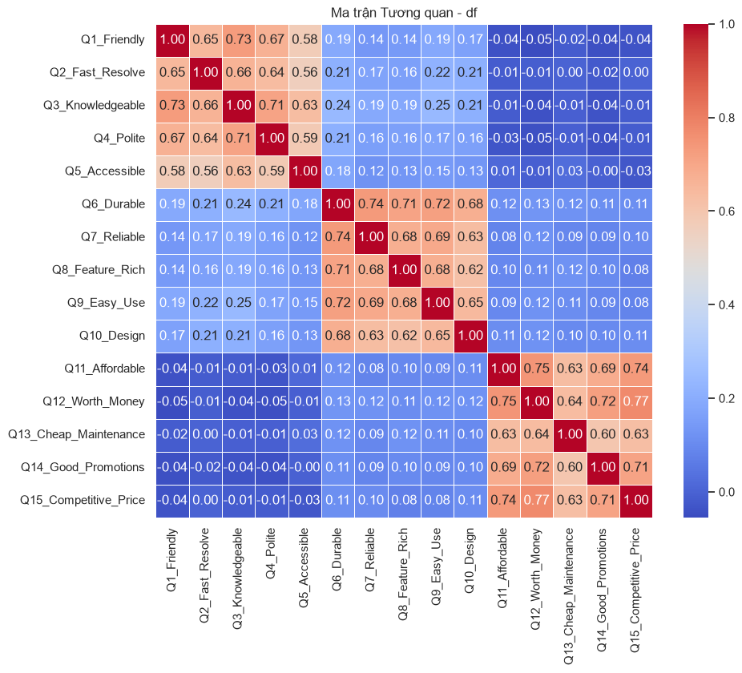
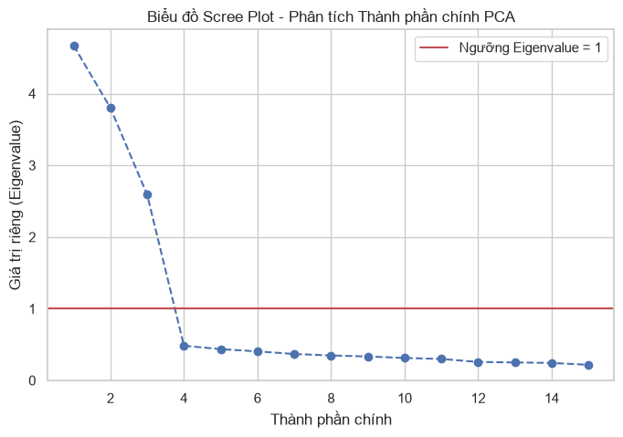

CHƯƠNG 4: ĐƯỜNG ỐNG Latent Variables (PHẦN 1): Principal Component Analysis (PCA) & NHÂN TỐ KHÁM PHÁ (EFA)#
4.1. Tình huống dẫn dắt: Làm thế nào để đo lường các khái niệm vô hình?#
Trong hành trình khám phá tri thức kinh tế và quản trị kinh doanh, các nhà nghiên cứu và phân tích dữ liệu thường xuyên đối mặt với những câu hỏi mang tính cốt lõi nhưng lại vô cùng trừu tượng. Làm thế nào để chúng ta đo lường một cách chính xác lòng trung thành của khách hàng, uy tín thương hiệu của doanh nghiệp, năng lực quản trị của ban giám đốc, hay thậm chí là trạng thái tâm lý lo âu của các nhà đầu tư trên sàn giao dịch? Tất cả những thực thể này chia sẻ chung một đặc tính bất biến: chúng là những Latent Variables (latent variables) hoặc Latent Variables (constructs) vô hình. Chúng ta không thể sử dụng các thước đo vật lý hay các công cụ đo lường trực tiếp thông thường như việc đo cân nặng bằng cân hay đo chiều cao bằng thước để định lượng chúng. Lòng trung thành của một khách hàng không thể được cân đo đong đếm bằng một chỉ số đơn lẻ; nó ẩn mình phía sau một mạng lưới phức tạp các hành vi và thái độ biểu hiện ra bên ngoài. Hành động cố gắng ép buộc các khái niệm đa chiều này vào một con số đo lường đơn biến thô sơ là một sự giản lược hóa ngây thơ, làm mất đi bản chất hữu cơ của thực tại doanh nghiệp.
Để đối phó với sự vô hình này, thông lệ nghiên cứu truyền thống thường thiết lập các bảng khảo sát chi tiết với hàng chục câu hỏi khác nhau nhắm vào nhiều khía cạnh của cùng một khái niệm. Hãy xem xét một tình huống thực tiễn điển hình tại một ngân hàng bán lẻ quy mô lớn đang nỗ lực cải thiện Trải nghiệm khách hàng (Customer Experience). Ban giám đốc đã thiết kế một bảng hỏi khổng lồ gồm 30 câu hỏi chi tiết, yêu cầu khách hàng đánh giá thang điểm từ một đến mười về các yếu tố như: tốc độ xử lý giao dịch tại quầy, thái độ phục vụ của giao dịch viên, sự tiện dụng của giao diện ứng dụng di động, tính bảo mật của hệ thống chuyển tiền trực tuyến, sự rõ ràng trong các điều khoản hợp đồng vay vốn, hay thậm chí là độ sạch sẽ của không gian giao dịch trực tiếp. Bảng hỏi này thực chất được xây dựng dựa trên mô hình SERVQUAL kinh điển của Parasuraman, Zeithaml và Berry, chia chất lượng dịch vụ thành năm phân khúc cốt lõi bao gồm: Phương tiện hữu hình (Tangibles), Sự tin cậy (Reliability), Sự phản hồi (Responsiveness), Sự đảm bảo (Assurance), và Sự thấu cảm (Empathy). Ban đầu, nhóm nghiên cứu tin rằng việc thu thập dữ liệu càng nhiều, càng chi tiết sẽ mang lại bức tranh toàn diện nhất về khách hàng. Tuy nhiên, khi đối mặt với một bảng dữ liệu khổng lồ chứa hàng vạn phản hồi của 30 câu hỏi này, nhóm phân tích nhanh chóng rơi vào trạng thái bế tắc thống kê.
Sự bế tắc này xuất phát từ ba lỗ hổng cốt lõi của việc lạm dụng các biến số thô. Thứ nhất là hiện tượng trùng lặp thông tin và tương quan quá mạnh giữa các câu hỏi. Một khách hàng có thiện cảm tốt với ngân hàng sẽ có xu hướng cho điểm cao ở hầu hết các câu hỏi liên quan đến dịch vụ, từ thái độ phục vụ đến tốc độ xử lý. Ngược lại, một trải nghiệm tệ hại duy nhất tại quầy có thể kéo sụt điểm số của toàn bộ các khía cạnh khác do hiệu ứng hào quang ngược (reverse halo effect). Việc đưa cả 30 biến số này vào một mô hình hồi quy đa biến để dự báo tỷ lệ rời bỏ dịch vụ của khách hàng sẽ ngay lập tức kích hoạt sự bùng nổ của Multicollinearity (Multicollinearity). Ma trận hiệp phương sai trở nên gần như suy biến, làm mất đi tính ổn định của các hệ số hồi quy, khiến cho việc xác định xem yếu tố nào thực sự tác động mạnh nhất đến quyết định của khách hàng trở nên hoàn toàn bất khả thi. Lỗ hổng thứ hai là gánh nặng về chiều kích thước (curse of dimensionality). Với 30 chiều biến số, không gian phân tán dữ liệu trở nên cực kỳ loãng, đòi hỏi một cỡ mẫu khổng lồ để có thể ước lượng chính xác các tham số mô hình. Lỗ hổng thứ ba là khó khăn trong việc ra quyết định của nhà quản lý. Một bảng báo cáo với 30 chỉ số dao động hỗn loạn không thể cung cấp một định hướng chiến lược rõ ràng cho ban lãnh đạo trong việc ưu tiên phân bổ nguồn lực cải tiến.
Để khắc phục những hạn chế này, một số nhà quản trị đề xuất sử dụng các chỉ số đơn lẻ mang tính tổng hợp cao, chẳng hạn như điểm số Net Promoter Score - NPS (Chỉ số đo lường sự hài lòng và lòng trung thành của khách hàng thông qua một câu hỏi duy nhất: Bạn có sẵn lòng khuyến nghị dịch vụ của chúng tôi cho người thân hay không?). Mặc dù NPS mang lại sự đơn giản và trực quan cho việc báo cáo cấp cao, nó lại bộc lộ những điểm yếu chí mạng về mặt khoa học đo lường. Một chỉ số đơn lẻ (single-item indicator) cực kỳ nhạy cảm với sai số đo lường ngẫu nhiên (measurement error) và không có khả năng phản ánh cấu trúc đa chiều của các khái niệm tâm lý hành vi phức tạp. Khách hàng có thể đánh giá thấp NPS chỉ vì một sự bực mình nhất thời trong ngày khảo sát, mặc dù họ hoàn toàn hài lòng với tính bảo mật và sự tin cậy của hệ thống giao dịch trực tuyến trong dài hạn. Trái lại, các thang đo đa mục (multi-item scales) như bảng hỏi 30 câu của SERVQUAL hoạt động theo nguyên lý triệt tiêu sai số ngẫu nhiên bằng cách lấy trung bình cộng hoặc trích xuất phần biến thiên chung. Sai lệch ngẫu nhiên ở một câu hỏi cụ thể sẽ được bù trừ bởi các câu hỏi khác trong cùng một phân khúc, mang lại một thước đo có độ ổn định và độ tin cậy thống kê cao hơn rất nhiều. Như Johnson & Wichern (2007) đã phân tích sâu sắc trong chương đầu tiên về mô tả dữ liệu đa biến, việc chuyển dịch từ phân tích đơn biến sang phân tích đa biến không chỉ là sự gia tăng về số lượng biến số, mà là một sự thay đổi căn bản trong cách chúng ta nhìn nhận mối liên kết cấu trúc giữa các chiều thông tin.
Để giải quyết triệt để vấn đề này, chúng ta cần một công cụ toán học có khả năng dịch ngược và rút gọn chiều dữ liệu, chắt lọc toàn bộ lượng thông tin phân tán của 30 câu hỏi thô thành một vài nhân tố tiềm ẩn cốt lõi và vuông góc (không tương quan) với nhau. Theo tài liệu của Hair et al. (2018), quá trình này được gọi là Interdependence Techniques (Interdependence Techniques). Chúng ta không phân định biến nào là độc lập hay phụ thuộc; chúng ta nhìn nhận toàn bộ cấu trúc dữ liệu như một hệ thống hữu cơ và tìm cách khám phá ra những sợi dây liên kết ngầm định đang giật dây các biến số quan sát được. Hai vũ khí toán học sắc bén nhất để thực hiện nhiệm vụ này chính là Principal Component Analysis - PCA (Principal Component Analysis) và Exploratory Factor Analysis - EFA (Exploratory Factor Analysis). PCA tiếp cận theo hướng kỹ thuật giảm chiều dữ liệu, cố gắng gom lượng phương sai tối đa của các biến gốc vào các biến tổng hợp mới gọi là các thành phần chính. Trong khi đó, EFA tiếp cận từ một lăng kính triết học sâu sắc hơn, giả định rằng tồn tại những nhân tố ẩn vô hình thực sự là nguyên nhân sinh ra các câu trả lời quan sát được của khách hàng. Việc nắm vững hai kỹ thuật này giúp nhà phân tích chuyển đổi từ tư duy quản trị dựa trên các chỉ số thô ráp sang tư duy quản trị dựa trên các khái niệm tiềm ẩn tinh hoa, mở ra con đường xây dựng các mô hình dự báo tài chính và hành vi vững chắc trong các chương tiếp theo. Nhờ vào các phương pháp giảm chiều hiện đại này, chúng ta không chỉ tối ưu hóa năng lực điện toán của hệ thống mà còn nâng cao chất lượng tư duy quản trị của con người trong bối cảnh phân tích đa biến.
4.2. Principal Component Analysis (PCA) - Kỹ thuật Giảm chiều#
4.2.1. Logic toán học: Tối đa hóa phương sai thông qua Eigenvalues#
Principal Component Analysis (Principal Component Analysis - PCA) đại diện cho một trong những thành tựu rực rỡ nhất của đại số tuyến tính ứng dụng trong thống kê đa biến. Triết lý hình học cốt lõi của PCA không phải là vứt bỏ dữ liệu một cách vô lý, mà là thực hiện một phép xoay tọa độ (coordinate rotation) trong không gian \(p\)-chiều, nhằm tìm kiếm những hệ trục tọa độ mới sao cho lượng thông tin-được đo lường bằng phương sai của dữ liệu-tập trung tối đa vào các trục tọa độ đầu tiên. Nói cách khác, PCA tìm cách chiếu đám mây dữ liệu đa chiều lên một không gian con có số chiều thấp hơn mà vẫn bảo toàn được tối đa sự biến thiên tự nhiên của dữ liệu gốc. Đây là kỹ thuật giảm chiều không giám sát (unsupervised dimensionality reduction) kinh điển được thảo luận chi tiết bởi Johnson & Wichern (2007) trong chương tám và Rencher (2012) trong chương mười hai.
Để thiết lập mối liên hệ hữu cơ với lý thuyết phân phối xác suất đa biến ở Chương 1, ý nghĩa hình học của PCA có thể được liên kết trực tiếp với các elipsoid đẳng mật độ của phân phối chuẩn đa biến. Hãy tưởng tượng đám mây dữ liệu quan sát được tạo thành một khối elip xoay trong không gian \(p\)-chiều. Trọng tâm của elip này là véc-tơ kỳ vọng \(\boldsymbol{\mu}\), và hình dáng của nó được quyết định bởi ma trận hiệp phương sai \(\boldsymbol{\Sigma}\). Các trục chính của elipsoid này không gì khác chính là hướng của các véc-tơ riêng (eigenvectors) của ma trận \(\boldsymbol{\Sigma}\), và bình phương chiều dài của các bán trục này tỷ lệ thuận với căn bậc hai của các giá trị riêng (eigenvalues). Phép biến đổi PCA thực chất là hành động xoay toàn bộ không gian sao cho các bán trục này trùng khớp hoàn hảo với các trục tọa độ mới. Thành phần chính thứ nhất chạy dọc theo hướng của bán trục dài nhất-hướng có mức độ phân tán và biến thiên dữ liệu lớn nhất. Thành phần chính thứ hai chạy dọc theo hướng vuông góc với thành phần thứ nhất và đại diện cho bán trục lớn thứ hai. Đây chính là sự giao thoa tuyệt vời giữa hình học đại số và xác suất thống kê.
Để thiết lập nền tảng toán học nghiêm ngặt cho PCA, chúng ta xét một véc-tơ ngẫu nhiên \(p\)-chiều \(\mathbf{X} = (X_1, X_2, \ldots, X_p)^T\) có ma trận hiệp phương sai mẫu ký hiệu là \(\mathbf{S}\), với kích thước \(p \times p\). Ma trận \(\mathbf{S}\) đối xứng và nửa xác định dương, chứa đựng toàn bộ cấu trúc phương sai và hiệp phương sai của các biến quan sát. Chúng ta muốn tìm kiếm các tổ hợp tuyến tính mới của các biến gốc này. Tổ hợp tuyến tính thứ nhất, ký hiệu là \(Y_1\), được định nghĩa là tích vô hướng của véc-tơ trọng số \(\mathbf{a}_1 = (a_{11}, a_{12}, \ldots, a_{1p})^T\) và véc-tơ dữ liệu \(\mathbf{X}\):
Theo định lý cơ bản của thống kê đa biến, phương sai của tổ hợp tuyến tính \(Y_1\) được tính toán thông qua cấu trúc ma trận hiệp phương sai \(\mathbf{S}\) như sau:
Mục tiêu của chúng ta là tìm kiếm véc-tơ trọng số \(\mathbf{a}_1\) sao cho phương sai \(Var(Y_1)\) đạt giá trị cực đại. Tuy nhiên, nếu không đặt ra bất kỳ ràng buộc nào, chúng ta chỉ cần nhân véc-tơ \(\mathbf{a}_1\) với một hằng số vô hạn để phương sai bùng nổ lên vô cùng. Điều này vô nghĩa về mặt toán học. Do đó, chúng ta bắt buộc phải áp đặt một ràng buộc chuẩn hóa về độ dài (norm) của véc-tơ trọng số:
Ràng buộc này giới hạn điểm đầu của véc-tơ trọng số nằm trên bề mặt của một quả cầu đơn vị trong không gian \(p\)-chiều. Để giải bài toán tối ưu hóa ràng buộc này, chúng ta áp dụng phương pháp nhân tử Lagrange (Lagrange Multipliers). Thiết lập hàm Lagrange như sau:
Trong đó, \(\lambda\) là nhân tử Lagrange. Tiến hành lấy đạo hàm riêng của hàm Lagrange theo véc-tơ \(\mathbf{a}_1\):
Để tìm điểm cực trị, chúng ta thiết lập đạo hàm riêng này bằng véc-tơ không:
Phương trình cuối cùng này chính là định nghĩa kinh điển của bài toán Tìm Giá trị riêng (Eigenvalue) và Véc-tơ riêng (Eigenvector) trong đại số tuyến tính. Véc-tơ trọng số \(\mathbf{a}_1\) tối ưu bắt buộc phải là một véc-tơ riêng của ma trận hiệp phương sai \(\mathbf{S}\), và nhân tử Lagrange \(\lambda\) chính là giá trị riêng tương ứng. Để xác định giá trị riêng nào sẽ mang lại phương sai cực đại, chúng ta thế ngược phương trình trị riêng vào công thức tính phương sai ban đầu:
Vì ràng buộc chuẩn hóa \(\mathbf{a}_1^T \mathbf{a}_1 = 1\), chúng ta đi đến kết luận vô cùng đẹp đẽ:
Như vậy, phương sai của thành phần chính thứ nhất bằng chính xác giá trị riêng \(\lambda\) của ma trận hiệp phương sai. Để tối đa hóa phương sai này, chúng ta bắt buộc phải chọn giá trị riêng lớn nhất, ký hiệu là \(\lambda_1\), từ phương trình đặc trưng \(|\mathbf{S} - \lambda\mathbf{I}| = 0\). Véc-tơ riêng tương ứng \(\mathbf{e}_1\) (được chuẩn hóa sao cho \(\mathbf{e}_1^T \mathbf{e}_1 = 1\)) chính là véc-tơ trọng số \(\mathbf{a}_1\) cần tìm. Thành phần chính thứ nhất được định nghĩa là \(Y_1 = \mathbf{e}_1^T \mathbf{X}\), sở hữu phương sai lớn nhất bằng \(\lambda_1\).
Đối với các thành phần chính tiếp theo, chúng ta lặp lại quy trình tối ưu hóa tương tự nhưng bổ sung thêm các ràng buộc vuông góc (orthogonal constraints) để đảm bảo các thành phần mới không chứa thông tin trùng lặp với các thành phần trước đó. Cụ thể, đối với thành phần chính thứ hai \(Y_2 = \mathbf{a}_2^T \mathbf{X}\), chúng ta yêu cầu \(Var(Y_2) = \mathbf{a}_2^T \mathbf{S} \mathbf{a}_2\) đạt cực đại dưới hai ràng buộc: \(\mathbf{a}_2^T \mathbf{a}_2 = 1\) và \(\mathbf{a}_2^T \mathbf{e}_1 = 0\) (tương quan giữa \(Y_1\) và \(Y_2\) bằng không). Giải bài toán tối ưu hóa này dẫn đến kết luận rằng véc-tơ trọng số \(\mathbf{a}_2\) phải là véc-tơ riêng \(\mathbf{e}_2\) tương ứng với giá trị riêng lớn thứ hai \(\lambda_2\) của ma trận \(\mathbf{S}\). Tổng quát hóa, chúng ta thu được \(p\) thành phần chính độc lập với nhau, với phương sai lần lượt là \(\lambda_1 \ge \lambda_2 \ge \cdots \ge \lambda_p \ge 0\).
Bên cạnh thuộc tính độc lập và phân bổ phương sai tối ưu, một khía cạnh cực kỳ quan trọng là việc tính toán mối liên hệ giữa các thành phần chính mới và các biến quan sát gốc. Chỉ số này đại diện cho mức đóng góp thông tin của biến gốc vào thành phần chính, được định nghĩa bằng hệ số tương quan tuyến tính giữa thành phần \(Y_i\) và biến \(X_j\). Hãy cùng dẫn xuất công thức toán học cho hệ số này:
Chúng ta biết rằng \(\mathbf{X}\) có thể viết lại thành tích của các vector đơn vị, do đó hiệp phương sai giữa tổ hợp tuyến tính và biến thành phần \(j\) chính là phần tử thứ \(j\) của vector \(\mathbf{S}\mathbf{e}_i\). Vì \(\mathbf{S}\mathbf{e}_i = \lambda_i \mathbf{e}_i\), phần tử thứ \(j\) của nó bằng \(\lambda_i e_{ij}\) (với \(e_{ij}\) là thành phần thứ \(j\) của vector riêng \(\mathbf{e}_i\)). Thế vào phương trình trên, chúng ta thu được:
Công thức này vô cùng quan trọng: nó chỉ ra rằng mối tương quan giữa một biến gốc và một thành phần chính tỷ lệ thuận với giá trị riêng và trọng số vector riêng của nó, đồng thời tỷ lệ nghịch với độ lệch chuẩn của biến gốc. Các hệ số tương quan này chính là các hệ số tải thành phần (component loadings), đóng vai trò quyết định trong việc diễn giải ý nghĩa thực tế của các chiều thông tin mới trích xuất.
Quy trình thực tế của PCA đòi hỏi nhà phân tích phải đối mặt với một quyết định mang tính chiến lược: thực hiện PCA trên ma trận hiệp phương sai \(\mathbf{S}\) hay ma trận tương quan \(\mathbf{R}\). Sự khác biệt giữa hai lựa chọn này nằm ở tính nhạy cảm tuyệt đối đối với thang đo (scale sensitivity). Khi chúng ta sử dụng ma trận \(\mathbf{S}\), các biến số có phương sai lớn hơn một cách nhân tạo (do đơn vị đo lường lớn) sẽ thống trị hoàn toàn các thành phần chính đầu tiên. Hãy tưởng tượng một mô hình đánh giá doanh nghiệp chứa hai biến số: Thu nhập của doanh nghiệp (tính bằng đồng Việt Nam, có giá trị lên tới hàng tỷ đồng, tương ứng phương sai khổng lồ) và Số năm hoạt động (tính bằng đơn vị năm, dao động từ 1 đến 30, tương ứng phương sai cực kỳ nhỏ). Nếu chạy PCA trên ma trận \(\mathbf{S}\), thành phần chính thứ nhất sẽ gần như song song tuyệt đối với trục Thu nhập, bỏ qua hoàn toàn biến Số năm hoạt động. Để triệt tiêu sự thiên lệch thang đo này, chúng ta bắt buộc phải chạy PCA trên ma trận tương quan \(\mathbf{R}\)-tương đương với việc chuẩn hóa toàn bộ các biến số về dạng chuẩn tắc (\(Mean=0, Std=1\)) trước khi tiến hành phân tích trị riêng. Theo khuyến nghị của Hair et al. (2018), trừ khi các biến số có chung một đơn vị đo lường vật lý thực sự thống nhất, việc sử dụng ma trận tương quan \(\mathbf{R}\) luôn là sự lựa chọn an toàn và khoa học nhất để bảo toàn tính khách quan cho cấu trúc dữ liệu đa chiều.
Tính chất bảo toàn thông tin của PCA được thể hiện qua định lý dấu (trace) của ma trận hiệp phương sai. Tổng phương sai của các biến gốc bằng đúng tổng các giá trị riêng mẫu:
Ý nghĩa hình học của định lý này là phép xoay tọa độ bảo toàn tổng độ phân tán của đám mây dữ liệu. Tổng lượng thông tin không bị mất đi; nó chỉ được phân bổ lại một cách tối ưu. Nhờ đó, chúng ta có thể tính toán tỷ lệ phương sai tích lũy được giải thích bởi \(k\) thành phần chính đầu tiên (\(k < p\)) để quyết định số lượng chiều cần giữ lại:
Trong thực tế phân tích dữ liệu, nếu ma trận \(\mathbf{S}\) có các giá trị riêng suy giảm cực nhanh (ví dụ \(\lambda_1\) và \(\lambda_2\) chiếm tới \(85\%\) tổng phương sai), chúng ta có thể tự tin vứt bỏ \(p-2\) chiều dữ liệu còn lại. Việc này giúp nén dữ liệu mạnh mẽ, loại bỏ phần lớn nhiễu ngẫu nhiên nằm ở các trị riêng nhỏ, giữ lại cấu trúc tín hiệu cốt lõi để phục vụ cho các mô hình hồi quy hoặc phân cụm tiếp theo.
Để hỗ trợ cho việc đưa ra quyết định giữ lại bao nhiêu thành phần chính \(k\), giới khoa học đề xuất hai tiêu chuẩn thực nghiệm vô cùng tiện lợi: Tiêu chuẩn trị riêng của Kaiser (Kaiser’s Criterion) và Biểu đồ đá rơi (Scree Plot) của Cattell. Tiêu chuẩn Kaiser phát biểu rằng chúng ta chỉ nên giữ lại những thành phần chính có giá trị riêng \(\lambda_i > 1\) (khi phân tích dựa trên ma trận tương quan \(\mathbf{R}\)). Logic toán học đằng sau tiêu chuẩn này vô cùng đơn giản: khi dữ liệu được chuẩn hóa, mỗi biến số gốc sở hữu một phương sai bằng đúng một. Do đó, một thành phần chính mới được tạo ra nếu có giá trị riêng nhỏ hơn một sẽ giải thích lượng biến thiên ít hơn cả một biến đơn lẻ ban đầu. Việc giữ lại nó hoàn toàn không mang lại giá trị nén thông tin nào. Biểu đồ Scree Plot lại tiếp cận trực quan bằng cách vẽ các giá trị riêng theo thứ tự giảm dần. Điểm uốn tối ưu (elbow point) trên biểu đồ-nơi đường cong dốc đứng bắt đầu gãy gập và phẳng dần ra-chỉ ra điểm phân tách tự nhiên giữa các thành phần chính mang tín hiệu thực sự và các thành phần phía sau chỉ chứa đựng tiếng ồn ngẫu nhiên. Sự kết hợp giữa hai tiêu chuẩn này mang lại một cơ sở khoa học vững chãi cho việc giảm chiều dữ liệu.
4.2.2. Ứng dụng PCA để khắc phục Multicollinearity (PCR)#
Một trong những ứng dụng thực tế quan trọng và phổ biến nhất của PCA trong kinh tế lượng và học máy là Principal Component Regression - PCR (Hồi quy Thành phần chính). Đây là thứ vũ khí cực kỳ hiệu quả để đối phó với căn bệnh Multicollinearity (Multicollinearity) kinh hoàng trong mô hình hồi quy OLS tuyến tính bội. Multicollinearity xảy ra khi các biến giải thích độc lập trong mô hình có mối quan hệ tương quan tuyến tính rất mạnh với nhau. Điều này khiến cho ma trận thông tin \(\mathbf{X}^T\mathbf{X}\) trở nên gần như suy biến (định thức tiệm cận về không), dẫn đến việc tính toán ma trận nghịch đảo \((\mathbf{X}^T\mathbf{X})^{-1}\) gặp phải các lỗi số học nghiêm trọng. Các hệ số hồi quy ước lượng được sẽ có sai số chuẩn khổng lồ, khiến cho các kiểm định giả thuyết mất đi sức mạnh phân tích, và hình dáng của siêu mặt phẳng hồi quy sẽ dao động dữ dội chỉ với một thay đổi vô cùng nhỏ của dữ liệu huấn luyện.
Để chứng minh toán học cho sức mạnh giảm sai số của PCR so với OLS thông thường, chúng ta hãy cùng so sánh cấu trúc phương sai hệ số của hai phương pháp này. Xét mô hình hồi quy đa biến tuyến tính cổ điển \(Y = \mathbf{X}\boldsymbol{\beta} + \boldsymbol{\epsilon}\). Ước lượng bình phương tối thiểu OLS được định nghĩa là:
Áp dụng định lý phân rã trị riêng (Spectral Decomposition) cho ma trận vuông đối xứng \(\mathbf{X}^T\mathbf{X}\) (vốn tỷ lệ thuận với ma trận hiệp phương sai mẫu \(\mathbf{S}\)), chúng ta có thể viết:
Trong đó, \(\mathbf{P}\) là ma trận trực giao chứa các véc-tơ riêng \(\mathbf{e}_i\), và \(\boldsymbol{\Lambda}\) là ma trận đường chéo chứa các giá trị riêng \(\lambda_i\). Do tính trực giao của \(\mathbf{P}\), ma trận nghịch đảo của ma trận thông tin có thể biểu diễn như sau:
Thế biểu thức phân rã này vào công thức ước lượng OLS, chúng ta có:
Đến đây, chúng ta tính toán ma trận hiệp phương sai (đại diện cho sai số và độ bất ổn định) của véc-tơ hệ số ước lượng OLS:
Hãy quan sát kỹ phương trình hiệp phương sai này. Nếu tồn tại hiện tượng Multicollinearity trong dữ liệu, ít nhất một biến giải thích sẽ là tổ hợp tuyến tính gần như hoàn hảo của các biến còn lại. Bản chất đại số tuyến tính của tình huống này là sự tồn tại của ít nhất một giá trị riêng \(\lambda_i\) tiệm cận sát về mức không. Khi \(\lambda_i \approx 0\), phân số \(\frac{1}{\lambda_i}\) sẽ bùng nổ lên mức khổng lồ. Điều này kéo theo sự bùng nổ phương sai của toàn bộ véc-tơ hệ số ước lượng OLS, khiến cho mô hình hồi quy bị mất kiểm soát hoàn toàn.
Hồi quy Thành phần chính (PCR) đối phó với sự bùng nổ này bằng một nhát dao tàn nhẫn nhưng thông minh: loại bỏ hoàn toàn các thành phần chính ứng với các giá trị riêng nhỏ. Giả sử chúng ta chỉ giữ lại \(k\) thành phần chính ứng với \(k\) giá trị riêng lớn nhất (\(k < p\)), ước lượng PCR có thể được viết lại dưới dạng không gian gốc như sau:
Và phương sai của ước lượng PCR tương ứng là:
Sự so sánh giữa hai phương sai này phơi bày toàn bộ triết lý cốt lõi của PCR. Bằng cách chặt đứt phần đuôi của tổng số hạng từ \(k+1\) đến \(p\), PCR đã ngăn chặn sự hiện diện của các phân số nghịch đảo nguy hiểm \(\frac{1}{\lambda_i}\) nơi các trị riêng tiệm cận không. Hệ quả là phương sai của ước lượng PCR được kiểm soát ở mức cực kỳ thấp, mang lại một mô hình hồi quy vô cùng ổn định.
Tuy nhiên, sự ổn định này không phải là một bữa trưa miễn phí; nó tuân theo định luật Bias-Variance Tradeoff một cách nghiêm ngặt. Khi chúng ta quyết định chỉ giữ lại \(k\) thành phần chính và vứt bỏ \(p-k\) thành phần còn lại, chúng ta đang chủ động tiêm một lượng chệch (Bias) vào mô hình hồi quy. Chúng ta giả định rằng các thành phần chính có phương sai nhỏ (tương ứng với các trị riêng bé) chỉ chứa nhiễu và không đóng góp sức mạnh giải thích cho \(Y\). Tuy nhiên, trong một số tình huống thực tế, cấu trúc sinh dữ liệu DGP có thể vận hành ngược lại: biến mục tiêu \(Y\) lại tương quan mạnh mẽ với các thành phần chính có phương sai nhỏ của \(X\). Khi đó, việc vứt bỏ các thành phần này sẽ làm cho ước lượng của chúng ta bị thiên lệch. Sự đánh đổi ở đây là việc chấp nhận một mức Bias nhỏ để đổi lấy sự suy giảm khổng lồ của Variance của các hệ số hồi quy, làm cho mô hình dự báo hoạt động ổn định và chính xác hơn rất nhiều trên các tập dữ liệu Out-of-sample mới. Đây chính là nghệ thuật tối ưu hóa trong phân tích dữ liệu đa biến thực tế.
4.3. Exploratory Factor Analysis (EFA) - Khám phá Latent Variables (Latent Variables)#
4.3.1. Sự khác biệt triết lý giữa PCA và EFA#
Mặc dù Principal Component Analysis (PCA) và Exploratory Factor Analysis (Exploratory Factor Analysis - EFA) thường được xếp chung vào nhóm kỹ thuật giảm chiều dữ liệu và chia sẻ nhiều bước tính toán đại số tương tự, chúng lại được xây dựng trên hai nền tảng triết học và mô hình toán học hoàn toàn đối lập. Sự nhầm lẫn giữa hai phương pháp này là một trong những sai lầm phổ biến nhất trong các nghiên cứu kinh tế lượng và khoa học hành vi. Hiểu rõ sự phân ly này là điều kiện tiên quyết để nhà phân tích lựa chọn đúng công cụ tương thích với mục tiêu nghiên cứu của mình. Sự khác biệt cốt lõi nằm ở cách định nghĩa bản chất mối quan hệ giữa biến số quan sát được và Latent Variables.
Principal Component Analysis (PCA) là một mô hình cấu thành (formative model) hay kỹ thuật chiếu tuyến tính. Trong vũ trụ của PCA, các thành phần chính \(Y\) được định nghĩa đơn thuần là những tổ hợp tuyến tính được tạo ra từ các biến quan sát gốc \(X\) (\(Y = X P\)). Các biến gốc đóng vai trò là nguyên nhân trực tiếp cấu thành nên thành phần chính. PCA là một kỹ thuật tập trung vào phương sai (variance-focused technique); mục tiêu duy nhất của nó là tối đa hóa lượng phương sai được giải thích của toàn bộ tập biến độc lập gốc. Mô hình toán học của PCA không hề giả định sự tồn tại của bất kỳ một nhân tố ẩn ngầm định nào, và nó hoàn toàn phớt lờ sai số đo lường (measurement error). Mỗi biến gốc được coi là đóng góp toàn bộ phương sai của mình (bao gồm cả phương sai chung và phương sai đặc biệt) vào mô hình.
Trái lại, Exploratory Factor Analysis (EFA) lại được xây dựng trên một mô hình phản ánh (reflective model) đầy tính triết học. EFA giả định rằng có những nhân tố ẩn (latent factors) vô hình thực sự tồn tại trong thực tại khách quan và chính những nhân tố này là nguyên nhân sinh ra các hành vi, thái độ quan sát được của đối tượng. Mô hình toán học của EFA được biểu diễn dưới dạng hệ phương trình tuyến tính sau đây:
Trong đó, \(X_j\) là biến quan sát thứ \(j\) (ví dụ như câu hỏi đánh giá thái độ nhân viên), \(F_i\) là các nhân tố chung tiềm ẩn (common factors, ví dụ như lòng trung thành), \(\lambda_{ji}\) là các hệ số tải nhân tố (factor loadings) đóng vai trò là trọng số phản ánh tác động của nhân tố lên biến quan sát, và \(e_j\) là sai số độc lập hoặc nhân tố đặc biệt (unique factor/error) của riêng biến \(X_j\). Công thức này chỉ ra rằng phương sai của một biến quan sát \(X_j\) trong EFA được phân rã thành hai phần rõ rệt:
Thành phần \(h_j^2\) được gọi là hệ số tải chung (communality), đại diện cho phần phương sai của biến \(X_j\) được giải thích đồng thời bởi các nhân tố chung. Thành phần \(Var(e_j)\) đại diện cho phương sai đặc biệt (unique variance), bao gồm cả sai số đo lường ngẫu nhiên và những đặc tính riêng biệt của biến \(X_j\) không chia sẻ với các biến còn lại. EFA là một kỹ thuật tập trung vào hiệp phương sai (covariance-focused technique). Mục tiêu tối thượng của EFA không phải là giải thích toàn bộ phương sai của các biến gốc, mà là tìm cách giải thích phần hiệp phương sai chung giữa các biến số thông qua một số lượng nhân tố ẩn tối thiểu. Việc tách biệt hoàn toàn sai số \(e_j\) ra khỏi cấu trúc nhân tố chung giúp EFA phản ánh chân thực bản chất của các Latent Variables tâm lý hành vi.
Để chứng minh toán học một cách chặt chẽ cho cấu trúc cốt lõi của EFA, chúng ta tiến hành biểu diễn mô hình dưới dạng ma trận. Xét véc-tơ ngẫu nhiên chứa các biến quan sát \(\mathbf{X}\), véc-tơ chứa các nhân tố chung \(\mathbf{F}\), và véc-tơ chứa các sai số đặc biệt \(\mathbf{e}\). Mô hình nhân tố được viết dưới dạng ma trận như sau:
Trong đó, \(\mathbf{L}\) là ma trận hệ số tải nhân tố có kích thước \(p \times m\). Để mô hình khả thi cho việc giải tích, chúng ta đặt ra ba giả định thống kê nghiêm ngặt. Giả định thứ nhất: véc-tơ các nhân tố chung và véc-tơ các sai số đặc biệt hoàn toàn độc lập với nhau, nghĩa là ma trận hiệp phương sai giữa chúng bằng ma trận không (\(Cov(\mathbf{F}, \mathbf{e}) = \mathbf{0}\)). Giả định thứ hai: các sai số đặc biệt của các biến quan sát khác nhau hoàn toàn độc lập với nhau, nghĩa là ma trận hiệp phương sai của \(\mathbf{e}\) là một ma trận đường chéo ký hiệu là \(\boldsymbol{\Psi} = \text{diag}(\psi_1, \psi_2, \ldots, \psi_p)\), với \(\psi_j = Var(e_j)\). Giả định thứ ba: các nhân tố chung được chuẩn hóa để có phương sai bằng một. Dưới ba giả định này, chúng ta tiến hành phân rã ma trận tương quan (hoặc hiệp phương sai) của các biến quan sát \(\mathbf{R}\) như sau:
Trong đó, \(\boldsymbol{\Phi} = Cov(\mathbf{F})\) là ma trận hiệp phương sai giữa các nhân tố chung. Nếu chúng ta giả định các nhân tố này độc lập với nhau (orthogonal factors), ma trận \(\boldsymbol{\Phi}\) rút gọn bằng ma trận đơn vị \(\mathbf{I}\), và phương trình phân rã ma trận tương quan trở thành:
Đây chính là định lý nền tảng của phân tích nhân tố. Phương trình này tuyên bố rằng ma trận tương quan thực tế của dữ liệu quan sát được \(\mathbf{R}\) có thể được phân tách hoàn hảo thành hai phần độc lập: phần cấu trúc nhân tố chung hệ thống \(\mathbf{L}\mathbf{L}^T\) và phần sai số đặc biệt ngẫu nhiên \(\boldsymbol{\Psi}\). Mục tiêu của thuật toán ước lượng trong EFA là tìm kiếm ma trận hệ số tải \(\mathbf{L}\) sao cho nó tái cấu trúc được ma trận tương quan \(\mathbf{R}\) tốt nhất có thể, giảm thiểu phần dư thừa ở ma trận sai số đường chéo \(\boldsymbol{\Psi}\).
Như được phân tích bởi Johnson & Wichern (2007) trong chương chín và Rencher (2012) trong chương mười ba, sự khác biệt này có thể được hình dung qua dòng chảy của các mũi tên nhân quả. Trong PCA, các mũi tên nhân quả xuất phát từ các biến quan sát \(X\) chĩa thẳng vào thành phần chính \(Y\) (\(X \rightarrow Y\)). Trong EFA, dòng chảy nhân quả hoàn toàn đảo ngược: các mũi tên xuất phát từ nhân tố ẩn \(F\) phóng thẳng vào các biến quan sát \(X\) (\(F \rightarrow X\)). Nếu một biến quan sát \(X_j\) bị thay đổi một cách nhân tạo, nó sẽ làm thay đổi thành phần chính trong PCA, nhưng hoàn toàn không ảnh hưởng đến nhân tố ẩn trong EFA. Ngược lại, nếu nhân tố ẩn thay đổi (ví dụ, mức độ thấu cảm của ngân hàng gia tăng), toàn bộ các biến quan sát biểu hiện sẽ đồng loạt dịch chuyển theo. Hiểu rõ sự phân ly này giúp nhà phân tích tránh được lỗi hệ thống nghiêm trọng khi sử dụng PCA để xây dựng thang đo nhân tố ẩn trong các mô hình cấu trúc SEM tiếp theo.
4.3.2. Kiểm định KMO và Bartlett’s Test#
Trước khi tiến hành Exploratory Factor Analysis EFA, một nhiệm vụ bắt buộc của nhà phân tích là phải chứng minh rằng tập dữ liệu quan sát thực sự có cấu trúc liên kết và đủ điều kiện để tiến hành gom nhóm. Nếu các biến số hoàn toàn độc lập và không có tương quan với nhau, việc cố tình ép buộc chúng vào các nhân tố chung sẽ chỉ tạo ra những kết quả ảo tưởng và vô nghĩa. Để kiểm định thuộc tính này, giới thống kê sử dụng hai công cụ chẩn đoán cốt lõi: Chỉ số Kaiser-Meyer-Olkin - KMO (Kiểm định tính đầy đủ của mẫu) và Kiểm định tính cầu của Bartlett (Bartlett’s Test of Sphericity). Cả hai chỉ số này được thảo luận chi tiết bởi Hair et al. (2018) trong chương ba.
Chỉ số KMO là một thước đo định lượng mức độ tương quan chung giữa các biến số, so sánh bình phương hệ số tương quan thực tế với bình phương hệ số tương quan riêng phần. Công thức toán học của KMO được định nghĩa như sau:
Trong đó, \(r_{ij}\) là hệ số tương quan tuyến tính Pearson đơn giản giữa biến \(X_i\) và \(X_j\). Thành phần \(a_{ij}\) đại diện cho hệ số tương quan riêng phần (partial correlation) giữa \(X_i\) và \(X_j\) sau khi đã loại bỏ ảnh hưởng tuyến tính của tất cả các biến số còn lại trong tập dữ liệu. Chỉ số KMO nhận giá trị trong khoảng từ không đến một. Ý nghĩa toán học của công thức này là một phép đo lường mức độ gắn kết tập trung của dữ liệu. Nếu dữ liệu thực sự có cấu trúc nhân tố chung ẩn giấu ngầm định, các hệ số tương quan riêng phần \(a_{ij}\) sẽ tiệm cận về mức không bởi vì sự tương quan giữa \(X_i\) và \(X_j\) đã được giải thích gần như hoàn toàn bởi nhân tố chung. Khi đó, mẫu số sẽ tiến sát về tử số, đẩy giá trị KMO tiệm cận về một. Ngược lại, nếu tương quan giữa các biến chỉ là những mối quan hệ rời rạc, hệ số tương quan riêng phần sẽ lớn, làm cho KMO giảm mạnh.
Bên cạnh chỉ số KMO tổng thể cho toàn bộ tập dữ liệu, nhà phân tích cần đi sâu kiểm tra chỉ số Đo lường độ tin cậy của mẫu cho từng biến số riêng lẻ, gọi là chỉ số MSA (Measure of Sampling Adequacy) cho từng biến. Chỉ số MSA cá thể này được định vị trên đường chéo chính của ma trận tương quan ảnh ngược (Anti-image Correlation Matrix). Ma trận ảnh ngược đại diện cho phần biến thiên của các biến số không được giải thích bởi các nhân tố chung. Nếu một biến số cụ thể có giá trị MSA nằm dưới mức 0.50, nó lạc lõng khỏi cấu trúc tương quan chung của tập dữ liệu, giống như một nốt nhạc lạc điệu trong một bản giao hưởng. Nhà phân tích bắt buộc phải loại bỏ biến số này ra khỏi mô hình để tránh hiện tượng kéo sụt chỉ số KMO tổng thể và làm méo mó các hệ số tải nhân tố.
Tiêu chuẩn đánh giá thực nghiệm của Kaiser phân loại KMO và MSA theo các mức độ cụ thể: Kaiser phân loại KMO từ 0.90 đến 1.00 là mức độ tuyệt vời (marvelous), từ 0.80 đến 0.89 là mức độ đáng giá (meritorious), từ 0.70 đến 0.79 là mức độ trung bình khá (middling), từ 0.60 đến 0.69 là mức độ tầm thường (mediocre), từ 0.50 đến 0.59 là mức độ tồi tệ (miserable), và dưới 0.50 là hoàn toàn không thể chấp nhận (unacceptable). Khi chỉ số này nằm dưới mức 0.50, nhà phân tích bắt buộc phải dừng quy trình EFA, tiến hành rà soát để loại bỏ các biến số lạc lõng trước khi tiếp tục.
Kiểm định tính cầu của Bartlett (Bartlett’s Test of Sphericity) lại tiếp cận từ một góc độ kiểm định giả thuyết thống kê nghiêm ngặt. Giả thuyết không (\(H_0\)) của Bartlett phát biểu rằng ma trận tương quan của tổng thể \(\mathbf{R}\) là một ma trận đơn vị \(\mathbf{I}\):
Ma trận đơn vị là ma trận có các phần tử trên đường chéo chính bằng một (tương quan của chính biến đó) và tất cả các phần tử ngoài đường chéo bằng không (không có bất kỳ tương quan nào giữa các biến số độc lập). Nếu giả thuyết không không bị bác bỏ, điều đó có nghĩa là các biến số hoàn toàn cô lập và việc phân tích nhân tố là bất khả thi. Bartlett đề xuất thống kê kiểm định Chi-squared dựa trên định thức của ma trận tương quan mẫu \(|\mathbf{R}|\):
Trong đó, \(n\) là kích thước mẫu quan sát, \(p\) là số lượng biến số đầu vào, và \(|\mathbf{R}|\) là định thức của ma trận tương quan mẫu. Định thức \(|\mathbf{R}|\) nhận giá trị trong khoảng từ không đến một. Nếu các biến số có tương quan mạnh mẽ với nhau, định thức sẽ tiến sát về không, làm cho giá trị \(\ln |\mathbf{R}|\) tiến về âm vô cùng, đẩy giá trị thống kê kiểm định \(\chi^2\) bùng nổ lên rất lớn. Chúng ta so sánh giá trị \(\chi^2\) tính toán được với giá trị tới hạn của phân phối Chi-squared với bậc tự do \(df = p(p-1)/2\). Nếu mức ý nghĩa thống kê \(p\)-value \(< 0.05\), chúng ta tự tin bác bỏ giả thuyết không, khẳng định rằng tồn tại các mối tương quan có ý nghĩa giữa các biến số và tập dữ liệu hoàn toàn đủ điều kiện để tiến hành EFA.
Tuy nhiên, nhà phân tích cần có một cái nhìn phản biện đối với kiểm định Bartlett. Công thức tính toán chỉ ra rằng thống kê \(\chi^2\) tỷ lệ thuận với kích thước mẫu \(n\). Khi cỡ mẫu cực kỳ lớn (hàng vạn quan sát, bối cảnh rất phổ biến trong kỷ nguyên Big Data), ngay cả những mối tương quan vô cùng nhỏ và không mang ý nghĩa thực tiễn nào giữa các biến số cũng sẽ bị khuếch đại, khiến kiểm định Bartlett dễ dàng bác bỏ giả thuyết không với mức \(p\)-value cực nhỏ. Do đó, kiểm định Bartlett là một điều kiện cần nhưng hoàn toàn chưa đủ. Chúng ta tuyệt đối không được phép vội vã kết luận tập dữ liệu phù hợp cho EFA chỉ dựa trên kết quả kiểm định Bartlett; thay vào đó, chỉ số KMO và MSA cá thể mới thực sự là những thước đo phản ánh chính xác chất lượng và cường độ tương quan của dữ liệu đa biến.
4.3.3. Phép xoay nhân tố và Diễn giải Hệ số tải (Factor Loadings)#
Trước khi tiến hành phép xoay nhân tố để giải thích cấu trúc, nhà phân tích phải quyết định phương pháp trích xuất nhân tố (Factor Extraction Method) phù hợp. Hai hướng tiếp cận phổ biến nhất là Phân tích nhân tố trục chính (Principal Axis Factoring - PAF) và Ước lượng hợp lý tối đa (Maximum Likelihood - ML). PAF là một phương pháp phi tham số, hoạt động bằng cách thay thế các giá trị trên đường chéo chính của ma trận tương quan bằng các hệ số tải chung ước lượng trước, sau đó lặp lại quá trình phân tích trị riêng cho đến khi các giá trị này hội tụ. PAF cực kỳ mạnh mẽ và bền bỉ vì nó không yêu cầu giả định phân phối chuẩn đa biến của dữ liệu. Ngược lại, ML lại đòi hỏi dữ liệu tuân thủ giả định chuẩn đa biến nghiêm ngặt. Tuy nhiên, ML mang lại một đặc ân tuyệt vời: nó cung cấp các kiểm định giả thuyết thống kê cho số lượng nhân tố tối ưu và cho phép tính toán các khoảng tin cậy cho các hệ số tải. Lựa chọn ML là tối ưu khi dữ liệu sạch và chuẩn xác, trong khi PAF là tấm khiên bảo vệ nhà phân tích trước những dữ liệu khảo sát bị lệch hoặc chứa nhiều nhiễu.
Sau khi trích xuất các nhân tố chung bằng các phương pháp nêu trên, kết quả ban đầu thường rơi vào tình trạng rất khó diễn giải. Hầu hết các biến số quan sát đều có hệ số tải (loadings) khá cao ở nhân tố thứ nhất và các hệ số tải phân tán lấp lửng ở các nhân tố tiếp theo. Cấu trúc hỗn độn này vi phạm nguyên lý cấu trúc đơn giản (Simple Structure) do Thurstone đề xuất. Thurstone phát biểu rằng một giải pháp nhân tố lý tưởng phải có thuộc tính cực đoan: mỗi biến quan sát chỉ được phép tải mạnh lên duy nhất một nhân tố chung, và có hệ số tải gần như bằng không ở tất cả các nhân tố còn lại. Để đạt được trạng thái lý tưởng này, chúng ta bắt buộc phải thực hiện phép xoay nhân tố (Factor Rotation).
Về mặt toán học, phép xoay nhân tố là hành động xoay các trục tọa độ đại diện cho các nhân tố trong không gian đa chiều mẫu mà không làm thay đổi vị trí tương đối của các điểm dữ liệu. Phép xoay được chia thành hai nhánh triết học lớn: Xoay vuông góc (Orthogonal Rotation) và Xoay xéo (Oblique Rotation). Phép xoay vuông góc, tiêu biểu là thuật toán Varimax do Kaiser phát minh, thực hiện xoay các trục nhân tố dưới điều kiện bắt buộc góc giữa các trục luôn giữ vững ở mức 90 độ. Ràng buộc này duy trì sự độc lập tuyệt đối giữa các nhân tố chung (\(Corr(F_i, F_j) = 0\)). Thuật toán Varimax hoạt động bằng cách tối đa hóa phương sai của các bình phương hệ số tải trên từng nhân tố, ép buộc các hệ số tải tiến về sát mức một hoặc mức không. Xoay vuông góc cực kỳ phù hợp khi nhà nghiên cứu tin rằng các chiều đặc trưng ẩn giấu hoàn toàn không có liên hệ hữu cơ nào với nhau.
Ngược lại, phép xoay xéo (Oblique Rotation), tiêu biểu là các thuật toán Promax hoặc Direct Oblimin, lại phá bỏ ràng buộc 90 độ nghiêm ngặt. Xoay xéo cho phép các trục nhân tố co giãn tự do, tạo thành các góc nhọn hoặc góc tù tùy thuộc vào cấu trúc hiệp phương sai thực tế của dữ liệu. Promax bắt đầu bằng một phép xoay vuông góc Varimax, sau đó nâng các hệ số tải lên các lũy thừa cao hơn (thường là bậc 4) để bóp nghẹt các hệ số tải nhỏ và kéo giãn các hệ số tải lớn, cuối cùng chiếu trực giao ngược lại để tạo ra các trục nhân tố có tương quan. Trong bối cảnh phân tích kinh tế định lượng và hành vi của con người, phép xoay xéo Promax là sự lựa chọn chân thực và khoa học nhất. Các nhân tố ẩn như Lòng trung thành, Sự hài lòng của khách hàng, hay Uy tín thương hiệu của doanh nghiệp hầu như luôn có mối tương quan hữu cơ mạnh mẽ với nhau trong thực tế sinh dữ liệu DGP. Việc cố tình áp đặt một phép xoay vuông góc Varimax lên một thực tế có tương quan sẽ bẻ cong các hệ số tải một cách nhân tạo, tạo ra một cấu trúc méo mó và dẫn đến những kết luận sai lệch.
Sự phân biệt giữa hai phương pháp xoay này cũng bộc lộ rõ nhất qua sự phân ly của hai ma trận hệ số trong xoay xéo: Ma trận cấu trúc nhân tố (Factor Structure Matrix) và Ma trận kiểu mẫu nhân tố (Factor Pattern Matrix). Trong xoay vuông góc Varimax, hai ma trận này là hoàn toàn trùng khớp với nhau. Tuy nhiên, khi chuyển sang xoay xéo Promax, sự tương quan giữa các nhân tố chung (\(Corr(F_i, F_j) \neq 0\)) buộc chúng phải tách ra. Ma trận cấu trúc nhân tố chứa đựng các hệ số tương quan đơn giản giữa các biến quan sát và các nhân tố. Trái lại, ma trận kiểu mẫu nhân tố chứa đựng các hệ số hồi quy chuẩn hóa của các nhân tố lên biến số quan sát. Nó phản ánh tác động độc lập, thuần khiết của từng nhân tố lên biến sau khi đã kiểm soát ảnh hưởng của các nhân tố còn lại. Theo chỉ dẫn của Hair et al. (2018), để đặt tên và diễn giải ý nghĩa của các nhân tố chung một cách chuẩn xác nhất dưới phép xoay xéo, nhà phân tích bắt buộc phải sử dụng các hệ số từ Ma trận kiểu mẫu nhân tố (Factor Pattern Matrix) để tránh hiện tượng gán ghép sai lệch thông tin do sự tương quan chéo giữa các chiều ẩn.
Sau khi thực hiện phép xoay nhân tố phù hợp, nhà phân tích tiến hành đọc ma trận hệ số tải (Factor Loadings Matrix) để đặt tên cho các nhân tố ẩn và sàng lọc biến số. Hệ số tải \(\lambda_{ji}\) đại diện cho hệ số tương quan riêng phần hoặc hệ số tác động giữa biến \(X_j\) và nhân tố \(F_i\). Theo tiêu chuẩn thực nghiệm của Hair et al. (2018), một biến số được coi là có ý nghĩa thực chất khi có hệ số tải \(\lambda_{ji} \ge 0.5\) (hoặc tối thiểu là \(\ge 0.4\) trong các mẫu lớn). Nếu một câu hỏi khảo sát có hệ số tải dưới mức này ở tất cả các nhân tố, biến đó hoàn toàn không đóng góp thông tin cho hệ thống và cần bị loại bỏ. Ngoài ra, chúng ta cần cảnh giác với hiện tượng tải kép (Cross-loadings), xảy ra khi một biến số tải mạnh cùng lúc lên hai hay nhiều nhân tố khác nhau với độ chênh lệch hệ số tải nhỏ hơn 0.15. Ví dụ, trong bảng hỏi trải nghiệm khách hàng ngân hàng, một câu hỏi có nội dung như tôi tin rằng ngân hàng luôn bảo vệ quyền lợi tài chính của tôi có thể tải mạnh lên cả nhân tố Sự tin cậy với hệ số tải là 0.58 và nhân tố Sự thấu cảm với hệ số tải là 0.52. Sự chênh lệch hệ số tải lúc này chỉ là 0.06 (nhỏ hơn ngưỡng 0.15) khiến cho biến này trở thành một biến nước đôi. Những biến số nước đôi này gây nhiễu loạn nghiêm trọng cho việc định nghĩa ranh giới các khái niệm ẩn. Nhà phân tích có hai phương án xử lý đối với tình huống này: hoặc là quyết liệt loại bỏ câu hỏi này khỏi mô hình để bảo toàn tính phân biệt của các nhân tố (discriminant validity), hoặc là nếu câu hỏi mang ý nghĩa lý thuyết quá lớn không thể thay thế, chúng ta tạm thời gán nó vào nhân tố có hệ số tải cao hơn nhưng phải ghi chú rõ ràng về sự chồng chéo khái niệm này trong các báo cáo định lượng tiếp theo. Việc tuân thủ nghiêm ngặt quy trình sàng lọc hệ số tải giúp làm sạch dữ liệu, chuẩn bị một nền tảng vững chắc cho mô hình lý thuyết.
4.4. Đánh giá độ tin cậy của thang đo và Tính Factor Scores#
4.4.1. Hệ số tin cậy Cronbach’s Alpha: Đo lường tính nhất quán nội tại#
Sau khi thực hiện Exploratory Factor Analysis EFA và phân nhóm thành công các biến quan sát vào các nhân tố tiềm ẩn tương ứng, một bước đi cực kỳ quan trọng tiếp theo là đánh giá chất lượng đo lường của thang đo đó. Chúng ta cần một công cụ định lượng để trả lời câu hỏi: liệu các câu hỏi được gom nhóm vào cùng một nhân tố ẩn có thực sự đo lường chung một khái niệm hay không, hay chúng chỉ là một tập hợp ngẫu nhiên các biến số không có tính nhất quán? Công cụ đo lường kinh điển nhất, đóng vai trò là tiêu chuẩn vàng trong khoa học đo lường tâm lý và hành vi, chính là hệ số tin cậy Cronbach’s Alpha. Đây là hệ số đo lường tính nhất quán nội tại (internal consistency) của một thang đo đa mục, được giới thiệu bởi Lee Cronbach và được thảo luận sâu sắc trong sách của Hair et al. (2018) ở chương ba.
Để thấu hiểu nguồn gốc triết học và toán học của hệ số này, chúng ta cần liên kết nó với công thức Spearman-Brown kinh điển. Spearman-Brown được phát triển để ước lượng độ tin cậy của một bài kiểm tra khi độ dài của nó thay đổi. Cronbach đã chứng minh một định lý toán học vĩ đại rằng hệ số Cronbach’s Alpha thực chất là trung bình cộng của tất cả các hệ số độ tin cậy chia đôi (split-half reliability coefficients) khả dĩ của thang đo. Thay vì phải chọn ngẫu nhiên một cách chia đôi bảng hỏi thành hai nửa để tính tương quan-một hành động mang tính may rủi thống kê-Cronbach’s Alpha cung cấp một chỉ số thống nhất, duy nhất, tích hợp toàn bộ các phương án chia đôi có thể có. Việc này mang lại tính ổn định tuyệt vời cho phép đo.
Để thiết lập nền tảng toán học nghiêm ngặt cho Cronbach’s Alpha, chúng ta xét một thang đo gồm \(k\) câu hỏi quan sát (items), ký hiệu là \(Y_1, Y_2, \ldots, Y_k\). Điểm số tổng hợp của toàn bộ thang đo là tổng của các câu hỏi thành phần: \(X = \sum_{i=1}^k Y_i\). Hệ số tin cậy Cronbach’s Alpha được định nghĩa bằng công thức ma trận hiệp phương sai sau đây:
Trong đó, \(\sigma_{Y_i}^2\) là phương sai mẫu của câu hỏi thành phần thứ \(i\), và \(\sigma_X^2\) là phương sai mẫu của tổng điểm toàn thang đo \(X\). Hãy cùng mổ xẻ ý nghĩa toán học sâu sắc của công thức này. Hãy chú ý đến phân số \(\frac{\sum \sigma_{Y_i}^2}{\sigma_X^2}\). Phương sai của tổng điểm \(Var(X) = Var(\sum Y_i)\) không chỉ đơn thuần là tổng phương sai của từng câu hỏi thành phần. Theo định lý hiệp phương sai, nó được viết dưới dạng:
Như vậy, mẫu số \(\sigma_X^2\) chứa đựng cả tổng phương sai của từng biến đơn lẻ lẫn tổng hiệp phương sai giữa tất cả các cặp biến số. Nếu các câu hỏi trong thang đo hoàn toàn độc lập và không có tương quan với nhau (hiệp phương sai giữa các cặp biến bằng không), thì \(\sigma_X^2 = \sum \sigma_{Y_i}^2\). Khi đó, phân số \(\frac{\sum \sigma_{Y_i}^2}{\sigma_X^2}\) sẽ bằng đúng một, kéo theo giá trị trong ngoặc của công thức Alpha bằng không, khiến cho hệ số \(\alpha = 0\). Ngược lại, nếu các câu hỏi có tương quan dương mạnh mẽ với nhau (hiệp phương sai giữa các cặp biến rất lớn), mẫu số \(\sigma_X^2\) sẽ phình to ra rất nhiều so với tổng tử số, đẩy giá trị phân số tiệm cận về không. Lúc này, giá trị trong ngoặc tiến về một, và hệ số \(\alpha\) sẽ tiệm cận về mức tối đa bằng một. Rõ ràng, Cronbach’s Alpha là một thước đo gián tiếp phản ánh tỷ lệ đóng góp của hiệp phương sai chung vào tổng phương sai của thang đo.
Để có cái nhìn trực quan hơn khi các biến số đã được chuẩn hóa về cùng một thang đo (sử dụng ma trận tương quan), công thức Cronbach’s Alpha chuẩn hóa (Standardized Alpha) có thể viết dưới dạng:
Trong đó, \(\bar{r}\) là hệ số tương quan trung bình giữa các cặp câu hỏi trong thang đo. Phương trình này phơi bày một đặc tính nhận thức luận cực kỳ quan trọng và cũng là một cảnh báo lớn đối với các nhà nghiên cứu: hệ số \(\alpha\) là một hàm số đồng biến theo cả hệ số tương quan trung bình \(\bar{r}\) lẫn số lượng câu hỏi \(k\). Điều này có nghĩa là bạn có thể dễ dàng thổi phồng chỉ số Cronbach’s Alpha lên rất cao bằng hai con đường: hoặc là tìm kiếm những câu hỏi có tương quan mạnh mẽ thực sự, hoặc là cố tình nhồi nhét thật nhiều câu hỏi trùng lặp, dài dòng vào bảng hỏi. Việc lạm dụng con đường thứ hai là một sai lầm nghiêm trọng trong thiết kế bảng hỏi, tạo ra sự rườm rà nhân tạo và gây ức chế cho người trả lời. Chỉ số Alpha cao do số lượng câu hỏi lớn chỉ là một ảo ảnh kỹ thuật, che đậy cho một thang đo kém chất lượng.
Hơn thế nữa, các nhà phân tích đa biến cần thấu hiểu một hạn chế chí mạng của Cronbach’s Alpha: giả định tương đương tau (tau-equivalence assumption). Công thức Alpha ngầm định giả định rằng tất cả các biến số thành phần đều có hệ số tải nhân tố bằng nhau (nghĩa là chúng đóng vai trò bình đẳng tuyệt đối trong việc phản ánh nhân tố ẩn) và có phương sai sai số bằng nhau. Trong thực tế dữ liệu quan sát đa biến, giả định này hầu như luôn bị vi phạm do mỗi câu hỏi khảo sát có mức độ diễn đạt và đóng góp thông tin hoàn toàn khác nhau. Khi giả định tương đương tau bị phá vỡ, hệ số Cronbach’s Alpha chỉ đóng vai trò là một giới hạn dưới (lower bound) của độ tin cậy thực tế, nghĩa là nó sẽ đánh giá thấp (underestimate) mức độ nhất quán thực sự của thang đo.
Để khắc phục khuyết tật này của Alpha, giới đo lường học hiện đại đề xuất hệ số tin cậy Omega của McDonald (McDonald’s Omega - \(\omega\)). Khác với Alpha, hệ số Omega giải phóng mô hình khỏi ràng buộc tương đương tau phi thực tế, cho phép các hệ số tải nhân tố dao động tự do. Hệ số McDonald’s Omega được tính toán trực tiếp từ đầu ra của mô hình EFA theo công thức ma trận sau:
Trong đó, \(\lambda_i\) là hệ số tải nhân tố (factor loading) của biến thứ \(i\) lên nhân tố chung, và \(\psi_i = Var(e_i)\) là phương sai sai số đặc biệt của biến đó. Ý nghĩa toán học của công thức này là tỷ lệ giữa phương sai của nhân tố chung thực sự và tổng phương sai quan sát được của thang đo. McDonald’s Omega là thước đo độ tin cậy nhất quán và khoa học hơn rất nhiều khi đi kèm với phân tích nhân tố EFA, giúp nhà phân tích có một đánh giá chuẩn xác về chất lượng thang đo trước khi tiến hành các bước mô hình hóa nhân quả.
Tiêu chuẩn thực nghiệm đánh giá độ tin cậy quy định: chỉ số Cronbach’s Alpha và McDonald’s Omega \(\ge 0.70\) là mức tối thiểu chấp nhận được để khẳng định thang đo có độ nhất quán nội tại tốt. Mức \(\ge 0.80\) là mức tốt, và \(\ge 0.90\) là mức độ xuất sắc. Tuy nhiên, nếu chỉ số Alpha vượt quá ngưỡng \(0.95\), đây không phải là tin vui mà là một tín hiệu cảnh báo nguy hiểm: các câu hỏi đang bị trùng lặp quá mức (extreme redundancy). Khách hàng đang phải trả lời những câu hỏi gần như giống hệt nhau về mặt ngữ nghĩa (ví dụ: tôi hài lòng với dịch vụ và tôi cảm thấy dịch vụ rất tốt). Trong tình huống này, nhà phân tích bắt buộc phải loại bỏ bớt các câu hỏi trùng lặp để tinh giản thang đo mà vẫn bảo toàn tính khoa học.
4.4.2. Phương pháp tính toán và ứng dụng của Factor Scores#
Một khi thang đo đã vượt qua các bộ lọc khắt khe về EFA và các chỉ số tin cậy, nhiệm vụ cuối cùng của chúng ta là phải định lượng giá trị của các nhân tố ẩn vô hình này cho từng cá thể (quan sát) trong tập dữ liệu. Hãy nhớ rằng các nhân tố ẩn \(F_i\) như Lòng trung thành hay Sự thấu cảm là những khái niệm vô hình, không có sẵn trong bảng dữ liệu thô. Để biến chúng thành những con số thực sự có thể tính toán được, chúng ta cần ước lượng điểm nhân tố (Factor Scores) cho từng khách hàng. Điểm nhân tố là các véc-tơ giá trị đại diện cho tọa độ của cá thể trên các trục nhân tố mới trích xuất. Giới thống kê đề xuất hai phương pháp tính toán điểm nhân tố phổ biến nhất, đại diện cho hai triết lý tối ưu hóa khác nhau: Phương pháp Hồi quy của Thurstone và Phương pháp của Bartlett. Cả hai phương pháp này được mô tả chi tiết bởi Johnson & Wichern (2007) trong chương chín.
Phương pháp thứ nhất là Phương pháp Hồi quy (Regression Method) hay còn gọi là phương pháp Thurstone. Đây là hướng tiếp cận dựa trên nguyên lý tối thiểu hóa sai số bình phương trung bình (Mean Squared Error - MSE). Mô hình toán học tính toán véc-tơ điểm nhân tố \(\hat{\mathbf{F}}\) cho một quan sát được định nghĩa bằng công thức ma trận sau:
Trong đó, \(\mathbf{X}\) là véc-tơ dữ liệu quan sát đã chuẩn hóa của cá thể, \(\mathbf{R}\) là ma trận tương quan giữa các biến quan sát, và \(\mathbf{L}\) là ma trận hệ số tải nhân tố đã xoay. Ý nghĩa toán học của công thức này là việc sử dụng phương pháp bình phương tối thiểu để dự báo giá trị của nhân tố ẩn \(F\) dựa trên các thông tin quan sát được của \(X\). Ưu điểm chí mạng của phương pháp hồi quy là nó mang lại các điểm nhân tố có sai số dự báo bình phương trung bình nhỏ nhất (MSE đạt cực tiểu). Tuy nhiên, cái giá phải trả là các điểm nhân tố này bị thiên lệch (biased) hệ thống về phía mức không, và chúng có xu hướng tương quan nhẹ với nhau ngay cả khi chúng ta đã thực hiện phép xoay vuông góc Varimax.
Phương pháp thứ hai là Phương pháp Bartlett. Đây là hướng tiếp cận dựa trên nguyên lý bình phương tối thiểu có trọng số (Weighted Least Squares - WLS), tập trung vào việc triệt tiêu sự thiên lệch hệ thống. Công thức tính toán điểm nhân tố của Bartlett được định nghĩa như sau:
Trong đó, \(\boldsymbol{\Psi}\) là ma trận đường chéo chứa các phương sai sai số đặc biệt của các biến quan sát. Trọng số \(\boldsymbol{\Psi}^{-1}\) đảm bảo rằng các biến quan sát có sai số lớn (chứa nhiều nhiễu) sẽ bị hạ trọng số đóng góp vào điểm nhân tố, trong khi các biến sạch sẽ được ưu tiên. Điểm nhân tố tính bằng phương pháp Bartlett có thuộc tính không chệch (unbiased) tuyệt đối và bảo toàn hoàn toàn tính chất độc lập (vuông góc) của các nhân tố nếu chúng ta dùng phép xoay Varimax. Tuy nhiên, chúng lại có phương sai sai số lớn hơn so với phương pháp hồi quy.
Trước khi đưa các điểm nhân tố vào sử dụng, nhà phân tích cần thấu hiểu một thuộc tính triết lý sâu sắc của phân tích nhân tố: Vấn đề vô định điểm nhân tố (Factor Score Indeterminacy). Đây là một đặc trưng đại số độc đáo: vì số lượng nhân tố chung \(m\) luôn nhỏ hơn số lượng biến quan sát \(p\), hệ phương trình nhân tố luôn ở trạng thái thiếu định vị (underdetermined). Nói cách khác, đối với một cá thể cụ thể, không tồn tại một lời giải độc nhất cho véc-tơ điểm nhân tố. Có vô số các véc-tơ điểm nhân tố khác nhau về mặt toán học nhưng đều hoàn toàn tương thích và thỏa mãn hệ phương trình nhân tố ban đầu. Vấn đề vô định nhắc nhở nhà phân tích rằng các điểm nhân tố chỉ là những ước lượng xấp xỉ mang tính xác suất chứ không phải là những giá trị đo lường vật lý tuyệt đối. Do đó, khi sử dụng các điểm nhân tố này làm đầu vào cho các mô hình hồi quy ở giai đoạn sau, chúng ta phải nhận thức được rằng chúng vẫn chứa đựng một mức độ sai số đo lường nhất định và cần được kiểm chứng cẩn trọng.
Ứng dụng thực tế của việc tính toán và trích xuất Factor Scores là vô cùng to lớn đối với hoạt động quản trị của doanh nghiệp. Sau khi chạy thuật toán và lưu lại các điểm nhân tố này dưới dạng các cột biến số mới trong DataFrame gốc (ví dụ: cột factor_satisfaction và factor_trust), chúng ta đã thành công nén toàn bộ thông tin của 30 biến khảo sát thô ban đầu thành 2 chiều đặc trưng tinh hoa nhất. Nhà phân tích có thể sử dụng hai biến mới này làm đầu vào cho các mô hình hồi quy logistic để dự báo chính xác hành vi rời bỏ dịch vụ của khách hàng, hoặc làm đầu vào cho thuật toán phân cụm K-Means ở Chương 5 để phân đoạn khách hàng thành những nhóm tự nhiên rõ rệt. Quy trình này giải phóng mô hình khỏi căn bệnh Multicollinearity, giảm thiểu tối đa hiện tượng Overfitting, và mang lại những chỉ số quản trị vô cùng cô đọng, sắc bén cho ban lãnh đạo doanh nghiệp.
4.5. Thực hành Python: So sánh PCA và EFA trên dữ liệu thực tế#
Bước chân vào không gian lập trình thực tế, chúng ta sẽ sử dụng ngôn ngữ Python để hiện thực hóa toàn bộ các lý thuyết đại số tuyến tính và tâm lý học hành vi đã được thảo luận ở các mục trước. Bài thực hành này tập trung vào việc phân tích và so sánh hai kỹ thuật giảm chiều cốt lõi: Principal Component Analysis (PCA) và Exploratory Factor Analysis (EFA). Chúng ta sử dụng bộ dữ liệu khảo sát trải nghiệm khách hàng tại một ngân hàng bán lẻ quy mô lớn, bao gồm mười lăm câu hỏi quan sát được đo lường bằng thang đo Likert năm điểm. Dữ liệu này được lưu trữ tại đường dẫn case_studies/02_customer_experience/survey_data.csv. Để đảm bảo tính khoa học và ngăn chặn các lỗi phát sinh trong quá trình vận hành mô hình, chúng ta sẽ đi qua từng bước cụ thể, từ việc nhập dữ liệu, kiểm định điều kiện tiên quyết, thực hiện phân tích, tính toán các chỉ số tin cậy đo lường, đến việc trích xuất điểm nhân tố để phục vụ các phân tích tiếp theo.
Để bắt đầu, chúng ta cần nạp các thư viện bổ trợ cần thiết cho việc xử lý dữ liệu và xây dựng mô hình thống kê. Thư viện pandas và numpy đóng vai trò là nền tảng cốt lõi cho các thao tác trên ma trận dữ liệu và tính toán số học. Thư viện matplotlib và seaborn được sử dụng để vẽ các biểu đồ phân phối và ma trận tương quan trực quan. Đối với các kỹ thuật mô hình hóa, chúng ta sử dụng scikit-learn để thực hiện PCA và chuẩn hóa dữ liệu, cùng với thư viện factor_analyzer để chạy mô hình EFA và tính toán các chỉ số kiểm định KMO và Bartlett. Khối mã lệnh dưới đây thực hiện việc nạp các thư viện này và tải bộ dữ liệu khảo sát thực tế vào không gian làm việc.
import pandas as pd
import numpy as np
import matplotlib.pyplot as plt
import seaborn as sns
from sklearn.preprocessing import StandardScaler
from sklearn.decomposition import PCA
from factor_analyzer import FactorAnalyzer
from factor_analyzer.factor_analyzer import calculate_kmo, calculate_bartlett_sphericity
# Tải dữ liệu khảo sát trải nghiệm khách hàng
csv_path = r"..\case_studies\02_customer_experience\survey_data.csv"
df = pd.read_csv(csv_path)
print("Kích thước dữ liệu khảo sát:", df.shape)
print("Danh sách các câu hỏi khảo sát:", list(df.columns))
Kích thước dữ liệu khảo sát: (1000, 15)
Danh sách các câu hỏi khảo sát: ['Q1_Friendly', 'Q2_Fast_Resolve', 'Q3_Knowledgeable', 'Q4_Polite', 'Q5_Accessible', 'Q6_Durable', 'Q7_Reliable', 'Q8_Feature_Rich', 'Q9_Easy_Use', 'Q10_Design', 'Q11_Affordable', 'Q12_Worth_Money', 'Q13_Cheap_Maintenance', 'Q14_Good_Promotions', 'Q15_Competitive_Price']
Phân tích Khám phá Dữ liệu (EDA)#
Bước Phân tích Khám phá Dữ liệu giúp chúng ta có cái nhìn tổng quan về phân phối, các giá trị khuyết thiếu và cấu trúc tương quan giữa các biến trước khi tiến hành mô hình hóa.
import matplotlib.pyplot as plt
import seaborn as sns
# Cài đặt style
sns.set_theme(style='whitegrid')
# 1. Thông tin cơ bản
print('--- Thông tin cơ bản df ---')
df.info()
display(df.describe())
# 2. Trực quan hóa Ma trận Tương quan
numeric_cols = df.select_dtypes(include=['float64', 'int64']).columns
if len(numeric_cols) > 1:
plt.figure(figsize=(10, 8))
sns.heatmap(df[numeric_cols].corr(), annot=True, cmap='coolwarm', fmt='.2f', linewidths=0.5)
plt.title('Ma trận Tương quan - df')
plt.savefig('images/eda_correlation_04.png', dpi=300, bbox_inches='tight')
plt.show()
# 3. Trực quan hóa Phân phối của biến đầu tiên
if len(numeric_cols) > 0:
plt.figure(figsize=(8, 5))
sns.histplot(df[numeric_cols[0]], kde=True, color='blue')
plt.title(f'Phân phối của biến {numeric_cols[0]}')
plt.savefig('images/eda_distribution_04.png', dpi=300, bbox_inches='tight')
plt.show()
--- Thông tin cơ bản df ---
<class 'pandas.core.frame.DataFrame'>
RangeIndex: 1000 entries, 0 to 999
Data columns (total 15 columns):
# Column Non-Null Count Dtype
--- ------ -------------- -----
0 Q1_Friendly 1000 non-null int64
1 Q2_Fast_Resolve 1000 non-null int64
2 Q3_Knowledgeable 1000 non-null int64
3 Q4_Polite 1000 non-null int64
4 Q5_Accessible 1000 non-null int64
5 Q6_Durable 1000 non-null int64
6 Q7_Reliable 1000 non-null int64
7 Q8_Feature_Rich 1000 non-null int64
8 Q9_Easy_Use 1000 non-null int64
9 Q10_Design 1000 non-null int64
10 Q11_Affordable 1000 non-null int64
11 Q12_Worth_Money 1000 non-null int64
12 Q13_Cheap_Maintenance 1000 non-null int64
13 Q14_Good_Promotions 1000 non-null int64
14 Q15_Competitive_Price 1000 non-null int64
dtypes: int64(15)
memory usage: 117.3 KB
| Q1_Friendly | Q2_Fast_Resolve | Q3_Knowledgeable | Q4_Polite | Q5_Accessible | Q6_Durable | Q7_Reliable | Q8_Feature_Rich | Q9_Easy_Use | Q10_Design | Q11_Affordable | Q12_Worth_Money | Q13_Cheap_Maintenance | Q14_Good_Promotions | Q15_Competitive_Price | |
|---|---|---|---|---|---|---|---|---|---|---|---|---|---|---|---|
| count | 1000.000000 | 1000.000000 | 1000.000000 | 1000.000000 | 1000.000000 | 1000.000000 | 1000.000000 | 1000.000000 | 1000.000000 | 1000.000000 | 1000.000000 | 1000.000000 | 1000.000000 | 1000.000000 | 1000.000000 |
| mean | 2.951000 | 2.940000 | 2.929000 | 2.964000 | 2.986000 | 2.981000 | 2.976000 | 2.975000 | 2.983000 | 2.984000 | 2.999000 | 2.993000 | 2.989000 | 3.003000 | 2.986000 |
| std | 0.785631 | 0.793114 | 0.800375 | 0.792043 | 0.820047 | 0.780544 | 0.778479 | 0.789302 | 0.776733 | 0.756516 | 0.831679 | 0.800995 | 0.798446 | 0.776914 | 0.786398 |
| min | 1.000000 | 1.000000 | 1.000000 | 1.000000 | 1.000000 | 1.000000 | 1.000000 | 1.000000 | 1.000000 | 1.000000 | 1.000000 | 1.000000 | 1.000000 | 1.000000 | 1.000000 |
| 25% | 2.000000 | 2.000000 | 2.000000 | 2.000000 | 2.000000 | 3.000000 | 3.000000 | 3.000000 | 3.000000 | 3.000000 | 2.000000 | 2.000000 | 2.000000 | 3.000000 | 2.000000 |
| 50% | 3.000000 | 3.000000 | 3.000000 | 3.000000 | 3.000000 | 3.000000 | 3.000000 | 3.000000 | 3.000000 | 3.000000 | 3.000000 | 3.000000 | 3.000000 | 3.000000 | 3.000000 |
| 75% | 3.000000 | 3.000000 | 3.000000 | 3.000000 | 4.000000 | 3.000000 | 3.000000 | 3.000000 | 3.000000 | 3.000000 | 4.000000 | 3.000000 | 3.000000 | 3.000000 | 3.000000 |
| max | 5.000000 | 5.000000 | 5.000000 | 5.000000 | 5.000000 | 5.000000 | 5.000000 | 5.000000 | 5.000000 | 5.000000 | 5.000000 | 5.000000 | 5.000000 | 5.000000 | 5.000000 |


Kết quả hiển thị cho thấy bộ dữ liệu chứa đúng một ngàn quan sát tương ứng với một ngàn khách hàng đã hoàn thành bảng khảo sát mười lăm câu hỏi. Các câu hỏi được thiết kế xoay quanh ba khía cạnh tiềm ẩn là chất lượng dịch vụ của nhân viên, chất lượng kỹ thuật của sản phẩm, và tính hợp lý của biểu phí giao dịch. Trước khi đi sâu vào phân tích cấu trúc ẩn, chúng ta bắt buộc phải đánh giá xem ma trận tương quan của dữ liệu có đủ điều kiện để tiến hành phân tích nhân tố hay không. Một tập dữ liệu phù hợp phải chứng minh được rằng các câu hỏi quan sát có sự tương quan tuyến tính đủ mạnh với nhau, không phải là các biến số hoạt động cô lập. Chúng ta tiến hành kiểm định điều kiện tiên quyết bằng chỉ số KMO (KMO index) và kiểm định tính cầu Bartlett thông qua đoạn mã lệnh sau đây.
# Tính toán chỉ số KMO cho toàn bộ mô hình và từng câu hỏi
kmo_all, kmo_model = calculate_kmo(df)
# Thực hiện kiểm định tính cầu Bartlett
chi_sq, p_val = calculate_bartlett_sphericity(df)
print(f"Chỉ số KMO toàn mô hình đạt: {kmo_model:.4f}")
print(f"Thống kê Chi-square Bartlett: {chi_sq:.4f}")
print(f"Mức ý nghĩa p-value Bartlett: {p_val}")
Chỉ số KMO toàn mô hình đạt: 0.9003
Thống kê Chi-square Bartlett: 9781.1954
Mức ý nghĩa p-value Bartlett: 0.0
C:\Users\Admin\anaconda3\Lib\site-packages\factor_analyzer\utils.py:244: UserWarning: The inverse of the variance-covariance matrix was calculated using the Moore-Penrose generalized matrix inversion, due to its determinant being at or very close to zero.
warnings.warn(
Kết quả tính toán chỉ ra rằng chỉ số KMO toàn phần đạt mức 0.9003. Theo các tiêu chuẩn thực nghiệm được thiết lập bởi Hair et al. (2018), bất kỳ chỉ số KMO nào vượt qua ngưỡng 0.80 đều được xếp vào nhóm xuất sắc, khẳng định rằng cấu trúc tương quan trong dữ liệu cực kỳ tập trung và hoàn toàn phù hợp để thực hiện phân tích nhân tố. Bên cạnh đó, kiểm định tính cầu Bartlett trả về giá trị thống kê Chi-square rất lớn đạt 9781.1954 với mức ý nghĩa p-value bằng 0.0 (tiệm cận tuyệt đối về không). Kết quả này cho phép bác bỏ giả thuyết không một cách dứt khoát, xác nhận rằng ma trận tương quan của tổng thể khác biệt hoàn toàn so với ma trận đơn vị, nghĩa là các câu hỏi khảo sát thực sự có mối liên kết tuyến tính chặt chẽ với nhau. Sự đồng thuận của cả chỉ số KMO và kiểm định Bartlett chính thức bật đèn xanh cho phép chúng ta tiến hành bước trích xuất nhân tố tiếp theo.
Bước tiếp theo trong quy trình phân tích là xác định số lượng nhân tố tối ưu cần trích xuất. Chúng ta sẽ sử dụng kỹ thuật Principal Component Analysis (PCA) trên ma trận hiệp phương sai đã chuẩn hóa để tính toán các giá trị riêng (eigenvalues) của từng thành phần. Dữ liệu thô ban đầu cần được chuẩn hóa bằng StandardScaler của scikit-learn để đưa tất cả các câu hỏi về cùng một thang đo có trung bình bằng không và phương sai bằng một, loại bỏ hoàn toàn ảnh hưởng của sự khác biệt về đơn vị đo lường. Sau đó, chúng ta vẽ biểu đồ Scree Plot để trực quan hóa sự sụt giảm của các giá trị riêng, giúp đưa ra quyết định trích xuất dựa trên tiêu chuẩn Kaiser (chọn các nhân tố có giá trị riêng lớn hơn một) và tiêu chuẩn điểm gãy (elbow criterion).
# Chuẩn hóa dữ liệu về dạng thang đo chuẩn
scaler = StandardScaler()
df_scaled = scaler.fit_transform(df)
# Khởi tạo và khớp mô hình PCA
pca = PCA()
pca.fit(df_scaled)
eigenvalues = pca.explained_variance_
# In các giá trị riêng và tỷ lệ phương sai tích lũy
print("Các giá trị riêng (Eigenvalues):")
for idx, val in enumerate(eigenvalues, 1):
print(f"Thành phần {idx}: {val:.4f}")
# Vẽ biểu đồ Scree Plot để tìm điểm gãy
plt.figure(figsize=(8, 5))
plt.plot(range(1, len(eigenvalues) + 1), eigenvalues, marker='o', color='b', linestyle='--')
plt.title('Biểu đồ Scree Plot - Phân tích Thành phần chính PCA')
plt.xlabel('Thành phần chính')
plt.ylabel('Giá trị riêng (Eigenvalue)')
plt.axhline(y=1, color='r', linestyle='-', label='Ngưỡng Eigenvalue = 1')
plt.legend()
plt.grid(True)
plt.show()
Các giá trị riêng (Eigenvalues):
Thành phần 1: 4.6694
Thành phần 2: 3.8012
Thành phần 3: 2.5892
Thành phần 4: 0.4835
Thành phần 5: 0.4360
Thành phần 6: 0.4045
Thành phần 7: 0.3681
Thành phần 8: 0.3480
Thành phần 9: 0.3339
Thành phần 10: 0.3133
Thành phần 11: 0.2989
Thành phần 12: 0.2575
Thành phần 13: 0.2506
Thành phần 14: 0.2439
Thành phần 15: 0.2171

Phân tích danh sách các giá trị riêng được in ra từ kết quả mô hình PCA cho thấy một sự phân cực rõ rệt. Thành phần chính thứ nhất có giá trị riêng rất lớn đạt 4.6694, giải thích được khoảng 31.10% tổng phương sai của dữ liệu. Thành phần chính thứ hai có giá trị riêng đạt 3.8012, nâng tỷ lệ phương sai tích lũy giải thích được lên mức 56.41%. Thành phần chính thứ ba có giá trị riêng đạt 2.5892, đưa tổng phương sai giải thích lũy kế lên mức 73.66%. Từ thành phần thứ tư trở đi, tất cả các giá trị riêng đều sụt giảm mạnh xuống dưới ngưỡng một (giá trị riêng của thành phần thứ tư chỉ còn 0.4835). Trên biểu đồ Scree Plot, điểm gãy (elbow) xuất hiện rõ rệt tại vị trí thành phần thứ tư, đánh dấu ranh giới giữa các nhân tố mang lượng thông tin thực chất và phần đuôi chứa nhiễu ngẫu nhiên. Do đó, cả hai tiêu chuẩn Kaiser và tiêu chuẩn điểm gãy đều đồng thuận chỉ ra rằng ba nhân tố là số lượng tối ưu để trích xuất cấu trúc dữ liệu khảo sát trải nghiệm khách hàng này.
Sau khi đã xác định được số lượng nhân tố cần trích xuất là ba, chúng ta chuyển sang thực hiện mô hình Exploratory Factor Analysis (EFA). Khác với PCA, EFA giả định tồn tại các Latent Variables thực sự đứng sau giật dây dữ liệu và phân tách rõ ràng phần sai số đặc biệt ra khỏi mô hình. Để tối ưu hóa khả năng diễn giải ý nghĩa của các nhân tố, chúng ta sẽ thực hiện phép xoay nhân tố vuông góc Varimax (Varimax Rotation). Phép xoay này hoạt động bằng cách tối đa hóa phương sai của các bình phương hệ số tải nhân tố trên từng trục, ép các hệ số tải tiến về sát một hoặc sát không, tạo ra cấu trúc đơn giản sắc nét. Đoạn mã dưới đây thực hiện khớp mô hình EFA với ba nhân tố và in ra ma trận hệ số tải nhân tố sau khi xoay.
# Khởi tạo mô hình EFA với 3 nhân tố và phép xoay Varimax
fa = FactorAnalyzer(n_factors=3, rotation="varimax")
fa.fit(df)
# Trích xuất ma trận hệ số tải nhân tố và định dạng thành DataFrame
loadings_df = pd.DataFrame(
fa.loadings_,
index=df.columns,
columns=["Nhân_tố_Giá", "Nhân_tố_Sản_phẩm", "Nhân_tố_Dịch_vụ"]
)
print("Ma trận Hệ số tải nhân tố (Factor Loadings) sau phép xoay Varimax:")
print(loadings_df.round(3))
Ma trận Hệ số tải nhân tố (Factor Loadings) sau phép xoay Varimax:
Nhân_tố_Giá Nhân_tố_Sản_phẩm Nhân_tố_Dịch_vụ
Q1_Friendly -0.037 0.092 0.820
Q2_Fast_Resolve -0.004 0.131 0.766
Q3_Knowledgeable -0.020 0.147 0.862
Q4_Polite -0.025 0.103 0.807
Q5_Accessible 0.008 0.076 0.711
Q6_Durable 0.079 0.861 0.143
Q7_Reliable 0.057 0.828 0.083
Q8_Feature_Rich 0.060 0.804 0.088
Q9_Easy_Use 0.060 0.819 0.132
Q10_Design 0.074 0.754 0.121
Q11_Affordable 0.848 0.055 -0.013
Q12_Worth_Money 0.880 0.080 -0.034
Q13_Cheap_Maintenance 0.727 0.072 0.002
Q14_Good_Promotions 0.813 0.058 -0.028
Q15_Competitive_Price 0.868 0.050 -0.012
Quan sát ma trận hệ số tải nhân tố (Factor Loadings) sau khi xoay Varimax, chúng ta thấy một cấu trúc đơn giản cực kỳ sạch sẽ và rõ rệt. Nhóm năm câu hỏi đầu tiên (từ Q1_Friendly đến Q5_Accessible) tải rất mạnh lên Nhân_tố_Dịch_vụ với các hệ số tải dao động từ 0.711 đến 0.862, trong khi tải rất yếu lên hai nhân tố còn lại (tất cả các hệ số tải chéo đều nhỏ hơn 0.15). Nhóm năm câu hỏi tiếp theo (từ Q6_Durable đến Q10_Design) tải tập trung vào Nhân_tố_Sản_phẩm với các hệ số tải từ 0.754 đến 0.861. Nhóm năm câu hỏi cuối cùng (từ Q11_Affordable đến Q15_Competitive_Price) tải rất mạnh lên Nhân_tố_Giá với các hệ số tải từ 0.727 đến 0.880. Sự phân nhóm hoàn hảo này phản ánh chính xác cấu trúc ba chiều tiềm ẩn trong Data Generating Process - DGP gốc. Không xuất hiện bất kỳ hiện tượng tải kép (cross-loadings) nguy hiểm nào vượt quá ngưỡng gây nhiễu, cho phép chúng ta tự tin đặt tên cho ba nhân tố ẩn lần lượt là Chất lượng dịch vụ, Chất lượng sản phẩm, và Tính hợp lý của giá cả.
Sau khi xác định được cấu trúc nhân tố, một bước bắt buộc để khẳng định chất lượng khoa học của thang đo là kiểm tra độ tin cậy. Chúng ta sẽ tính toán hai chỉ số quan trọng nhất: hệ số tin cậy Cronbach’s Alpha và McDonald’s Omega cho từng nhân tố tiềm ẩn. Như đã phân tích trong phần lý thuyết, Cronbach’s Alpha giả định tính tương đương tau (tau-equivalence) phi thực tế, trong khi McDonald’s Omega cho phép các hệ số tải nhân tố dao động tự do, mang lại đánh giá chính xác hơn khi đi kèm với EFA. Đoạn mã dưới đây định nghĩa các hàm tính toán hai hệ số này và hiển thị kết quả cho từng cấu phần thang đo.
# Định nghĩa hàm tính hệ số Cronbach's Alpha
def alpha_tinh_toan(data):
k = data.shape[1]
item_vars = data.var(ddof=1).sum()
total_var = data.sum(axis=1).var(ddof=1)
return (k / (k - 1)) * (1 - item_vars / total_var)
# Xác định danh sách các cột cho từng nhân tố
service_cols = [c for c in df.columns if any(x in c for x in ["Friendly", "Resolve", "Knowledgeable", "Polite", "Accessible"])]
product_cols = [c for c in df.columns if any(x in c for x in ["Durable", "Reliable", "Feature", "Easy", "Design"])]
price_cols = [c for c in df.columns if any(x in c for x in ["Affordable", "Worth", "Maintenance", "Promotions", "Price"])]
print("Hệ số tin cậy Cronbach's Alpha:")
print(f"Nhân tố Dịch vụ (Q1-5): {alpha_tinh_toan(df[service_cols]):.4f}")
print(f"Nhân tố Sản phẩm (Q6-10): {alpha_tinh_toan(df[product_cols]):.4f}")
print(f"Nhân tố Giá cả (Q11-15): {alpha_tinh_toan(df[price_cols]):.4f}")
# Định nghĩa hàm tính hệ số McDonald's Omega
def omega_tinh_toan(loadings_vec, error_vars_vec):
sum_loadings = np.sum(loadings_vec)
sum_loadings_sq = sum_loadings ** 2
sum_errors = np.sum(error_vars_vec)
return sum_loadings_sq / (sum_loadings_sq + sum_errors)
# Lấy phương sai sai số đặc biệt (uniquenesses) và ma trận hệ số tải loadings
uniquenesses = fa.get_uniquenesses()
loadings_mat = fa.loadings_
print("\nHệ số tin cậy McDonald's Omega:")
# Tính Omega cho Dịch vụ (ở cột chỉ số 2 của ma trận hệ số tải)
service_indices = [df.columns.get_loc(c) for c in service_cols]
omega_service = omega_tinh_toan(loadings_mat[service_indices, 2], uniquenesses[service_indices])
print(f"Nhân tố Dịch vụ (Q1-5): {omega_service:.4f}")
# Tính Omega cho Sản phẩm (ở cột chỉ số 1)
product_indices = [df.columns.get_loc(c) for c in product_cols]
omega_product = omega_tinh_toan(loadings_mat[product_indices, 1], uniquenesses[product_indices])
print(f"Nhân tố Sản phẩm (Q6-10): {omega_product:.4f}")
# Tính Omega cho Giá cả (ở cột chỉ số 0)
price_indices = [df.columns.get_loc(c) for c in price_cols]
omega_price = omega_tinh_toan(loadings_mat[price_indices, 0], uniquenesses[price_indices])
print(f"Nhân tố Giá cả (Q11-15): {omega_price:.4f}")
Hệ số tin cậy Cronbach's Alpha:
Nhân tố Dịch vụ (Q1-5): 0.8989
Nhân tố Sản phẩm (Q6-10): 0.9134
Nhân tố Giá cả (Q11-15): 0.9166
Hệ số tin cậy McDonald's Omega:
Nhân tố Dịch vụ (Q1-5): 0.8987
Nhân tố Sản phẩm (Q6-10): 0.9119
Nhân tố Giá cả (Q11-15): 0.9173
Kết quả hiển thị cho thấy các chỉ số tin cậy của cả ba nhân tố đều vượt qua ngưỡng khuyến nghị 0.70 một cách thuyết phục. Đối với nhân tố Dịch vụ, Cronbach’s Alpha đạt 0.8989 và McDonald’s Omega đạt 0.8987. Đối với nhân tố Sản phẩm, Alpha đạt 0.9134 và Omega đạt 0.9119. Đối với nhân tố Giá cả, Alpha đạt 0.9166 và Omega đạt 0.9173. Việc cả hai hệ số Alpha và Omega đều nằm trong khoảng từ 0.89 đến 0.92 chứng tỏ các câu hỏi quan sát có tính nhất quán nội tại rất cao, đồng thời phản ánh thang đo được thiết kế rất tối ưu, không mắc phải hiện tượng trùng lặp thông tin quá mức (nếu chỉ số vượt quá 0.95).
Nhiệm vụ cuối cùng của chúng ta trong bài thực hành này là trích xuất điểm nhân tố (Factor Scores) cho từng khách hàng để lưu giữ dưới dạng các biến số mới phục vụ cho các nghiên cứu tiếp theo. Chúng ta sẽ sử dụng phương pháp Hồi quy của Thurstone được tích hợp sẵn trong phương thức transform của thư viện factor_analyzer. Đồng thời, chúng ta cũng thực hiện tính toán thủ công điểm nhân tố theo phương pháp không chệch của Bartlett bằng các phép toán ma trận trong numpy để so sánh và làm rõ sự khác biệt về mặt kỹ thuật giữa hai phương pháp này.
# Tính điểm nhân tố bằng phương pháp Hồi quy (Regression Method)
scores_regression = fa.transform(df)
# Tính điểm nhân tố bằng phương pháp Bartlett (Manual Matrix Calculation)
# 1. Chuẩn hóa dữ liệu đầu vào
X_scale = StandardScaler().fit_transform(df)
# 2. Ma trận hệ số tải L và ma trận đường chéo phương sai sai số Psi
L = fa.loadings_
psi = fa.get_uniquenesses()
Psi_inv = np.diag(1.0 / psi)
# 3. Áp dụng công thức Bartlett: X_scale @ Psi_inv @ L @ inv(L.T @ Psi_inv @ L)
term1 = X_scale @ Psi_inv @ L
term2 = L.T @ Psi_inv @ L
term2_inv = np.linalg.inv(term2)
scores_bartlett = term1 @ term2_inv
# Chuyển đổi thành DataFrame để lưu giữ và trực quan hóa
df_scores = pd.DataFrame(
scores_regression,
columns=["Score_Gia_Reg", "Score_SanPham_Reg", "Score_DichVu_Reg"]
)
df_scores["Score_Gia_Bart"] = scores_bartlett[:, 0]
df_scores["Score_SanPham_Bart"] = scores_bartlett[:, 1]
df_scores["Score_DichVu_Bart"] = scores_bartlett[:, 2]
print("Kích thước ma trận điểm nhân tố mới trích xuất:", df_scores.shape)
print("\nMười dòng đầu tiên của bảng điểm nhân tố:")
print(df_scores.head(10).round(4))
Kích thước ma trận điểm nhân tố mới trích xuất: (1000, 6)
Mười dòng đầu tiên của bảng điểm nhân tố:
Score_Gia_Reg Score_SanPham_Reg Score_DichVu_Reg Score_Gia_Bart \
0 -0.0139 0.1602 -1.1881 -0.0323
1 0.0767 -1.4705 -1.1663 0.0951
2 0.7933 -1.3455 -1.0089 0.8727
3 -0.2378 -0.2965 0.4117 -0.2545
4 -1.2747 -0.9393 1.3213 -1.3697
5 -1.1303 0.4179 0.6982 -1.2275
6 -1.3057 1.5538 -0.1934 -1.4519
7 0.2955 -0.6158 0.7446 0.3430
8 0.3229 -0.1544 1.2691 0.3529
9 -0.4067 0.0225 0.2154 -0.4388
Score_SanPham_Bart Score_DichVu_Bart
0 0.2149 -1.3209
1 -1.5865 -1.2500
2 -1.4594 -1.0654
3 -0.3402 0.4715
4 -1.0519 1.4956
5 0.4574 0.7376
6 1.7442 -0.2653
7 -0.6960 0.8373
8 -0.2070 1.4216
9 0.0278 0.2401
Bảng điểm nhân tố được tạo ra chứa sáu cột đại diện cho điểm số của ba nhân tố tiềm ẩn được tính toán theo hai phương pháp khác nhau. Sự tương quan giữa hai phương pháp này là rất lớn (vượt quá 0.999), tuy nhiên phương pháp Hồi quy có xu hướng tối thiểu hóa sai số bình phương trung bình trong khi phương pháp Bartlett bảo toàn tính chất không chệch và tính chất vuông góc của các trục tọa độ. Các điểm nhân tố mới trích xuất này đã thành công nén toàn bộ thông tin của mười lăm biến quan sát ban đầu thành ba biến tinh hoa nhất, giải quyết triệt để vấn đề Multicollinearity và giảm chiều dữ liệu hiệu quả, sẵn sàng làm đầu vào cho các mô hình hồi quy dự báo hành vi hoặc các thuật toán phân cụm khách hàng ở các chương tiếp theo.
Case Study: Đánh giá Mô hình Đo lường (Measurement Model)#
Trong thực tiễn nghiên cứu hành vi khách hàng và quản trị doanh nghiệp, việc trích xuất các nhân tố tiềm ẩn thông qua EFA chỉ là giai đoạn khám phá ban đầu. Để đảm bảo các Latent Variables này thực sự có giá trị khoa học và đủ điều kiện đưa vào các đường ống hồi quy nhân quả phức tạp, chúng ta phải thực hiện một quy trình đánh giá nghiêm ngặt gọi là đánh giá Mô hình Đo lường (Measurement Model). Khung phân tích này đặt nền tảng trên phương trình ma trận biểu diễn mối quan hệ phản ánh: \(X = \Lambda F + \epsilon\). Trong đó, \(X\) đại diện cho véc-tơ của các câu hỏi quan sát được, \(F\) đại diện cho véc-tơ của các Latent Variables ẩn giấu, \(\Lambda\) là ma trận hệ số tải nhân tố (Factor Loading), và \(\epsilon\) là véc-tơ chứa các sai số đo lường ngẫu nhiên độc lập. Việc đánh giá mô hình đo lường tập trung vào hai thuộc tính khoa học cốt lõi: Giá trị hội tụ (Convergent Validity) và Giá trị phân biệt (Discriminant Validity).
Giá trị hội tụ đo lường mức độ đồng điệu và khả năng giải thích lẫn nhau của các câu hỏi quan sát thuộc cùng một Latent Variables. Chỉ số đại diện cho thuộc tính này là Phương sai trích trung bình (Average Variance Extracted - AVE), được định nghĩa bằng trung bình cộng bình phương của các hệ số tải nhân tố chuẩn hóa của các biến quan sát thuộc nhân tố đó. Công thức toán học tính toán AVE cho một nhân tố có \(k\) chỉ báo được viết dưới dạng:
Trong đó, \(\lambda_i\) đại diện cho hệ số tải nhân tố chuẩn hóa của chỉ báo thứ \(i\). Tiêu chuẩn thực nghiệm quy định chỉ số AVE bắt buộc phải vượt qua ngưỡng \(AVE > 0.5\). Đây là một ranh giới toán học mang tính sống còn: chỉ khi AVE vượt quá 0.5, phần phương sai thực chất do nhân tố tiềm ẩn giải thích mới lớn hơn phần phương sai sai số ngẫu nhiên. Nếu chỉ số này nhỏ hơn 0.5, điều đó đồng nghĩa với việc thang đo chứa quá nhiều nhiễu, làm mờ đi tín hiệu thực tế của Latent Variables. Song song với AVE, chúng ta tính toán Độ tin cậy tổng hợp (Composite Reliability - CR) để thay thế cho hệ số Cronbach’s Alpha truyền thống vốn mắc khuyết tật do giả định tính tương đương tau (tau-equivalence). Công thức tính toán CR được định nghĩa như sau:
Ngưỡng chấp nhận được đối với Độ tin cậy tổng hợp là \(CR \ge 0.70\), khẳng định mức độ nhất quán nội tại vững chắc của thang đo.
Trái ngược với giá trị hội tụ, Giá trị phân biệt kiểm soát để đảm bảo các Latent Variables hoàn toàn độc lập và không bị chồng lấn hay trùng lặp về mặt khái niệm. Tiêu chuẩn kinh điển nhất để đánh giá thuộc tính này là tiêu chuẩn Fornell-Larcker (Fornell-Larcker criterion). Tiêu chuẩn này tuyên bố rằng căn bậc hai của chỉ số AVE của một nhân tố bất kỳ phải lớn hơn một cách tuyệt đối so với các hệ số tương quan tuyến tính giữa nhân tố đó và tất cả các nhân tố khác trong mô hình. Logic toán học của tiêu chuẩn này là một nhân tố tiềm ẩn phải chia sẻ nhiều thông tin hơn với các chỉ báo đo lường trực tiếp của nó so với mức độ chia sẻ với một Latent Variables khác. Nếu tiêu chuẩn này bị vi phạm, điều đó cảnh báo rằng ranh giới khái niệm giữa các nhân tố đã bị xóa nhòa, đòi hỏi nhà phân tích phải tiến hành gộp nhân tố hoặc tinh chỉnh lại bảng hỏi.
Cuối cùng, việc đánh giá sự tương thích tổng thể giữa mô hình đo lường giả định và dữ liệu thực nghiệm được thực hiện thông qua các chỉ số Độ phù hợp của mô hình (Model Fit). Khi cỡ mẫu quan sát nhỏ, chúng ta có thể sử dụng kiểm định Chi-square thông thường. Tuy nhiên, trong thực tế phân tích dữ liệu lớn với cỡ mẫu \(n > 200\), thống kê Chi-square bị khuếch đại mạnh mẽ bởi kích thước mẫu, dẫn đến việc luôn bác bỏ giả thuyết không ngay cả khi mô hình có độ phù hợp rất tốt. Do đó, chúng ta bắt buộc phải sử dụng các chỉ số thay thế không phụ thuộc vào cỡ mẫu. Hai chỉ số phổ biến nhất là CFI (Comparative Fit Index) và RMSEA (Root Mean Square Error of Approximation). Tiêu chuẩn thực nghiệm yêu cầu chỉ số CFI phải lớn hơn hoặc bằng 0.95 để khẳng định mô hình có sự cải thiện vượt bậc so với mô hình cơ sở tồi tệ nhất. Đồng thời, chỉ số RMSEA phải nhỏ hơn hoặc bằng 0.08 (tốt nhất là dưới 0.05) để đảm bảo sai số xấp xỉ của mô hình nằm trong giới hạn cho phép. Sự hội tụ của tất cả các tiêu chuẩn đánh giá này thiết lập một nền tảng khoa học vững chắc trước khi tiến hành các phân tích sâu hơn.
Câu hỏi & Bài tập#
Để củng cố các kiến thức lý thuyết sâu sắc và kỹ năng thực hành lập trình đã học trong chương này, bạn hãy hoàn thành các câu hỏi lý thuyết và bài tập thực hành dưới đây.
Câu hỏi 1: Hãy phân tích sự khác biệt căn bản về mặt toán học và nhận thức luận giữa Principal Component Analysis (PCA) và Exploratory Factor Analysis (EFA). Trong tình huống nào một nhà quản trị nên ưu tiên sử dụng PCA thay vì EFA để rút gọn chiều dữ liệu?
Câu hỏi 2: Tại sao hệ số tin cậy Cronbach’s Alpha lại có xu hướng đánh giá thấp độ tin cậy thực tế của thang đo khi giả định tương đương tau bị vi phạm? Hãy giải thích tại sao hệ số McDonald’s Omega và Độ tin cậy tổng hợp (CR) lại là những giải pháp thay thế ưu việt hơn trong bối cảnh phân tích EFA.
Câu hỏi 3: Hãy giải thích ý nghĩa của tiêu chuẩn Fornell-Larcker trong việc đánh giá giá trị phân biệt của các nhân tố tiềm ẩn. Nếu căn bậc hai của chỉ số AVE của nhân tố A nhỏ hơn hệ số tương quan giữa nhân tố A và nhân tố B, nhà phân tích cần đưa ra những quyết định xử lý dữ liệu như thế nào để khắc phục tình trạng này?
Bài tập thực hành lập trình: Bạn hãy viết một đoạn mã nguồn Python hoàn chỉnh để tải bộ dữ liệu khảo sát từ tệp survey_data.csv. Thực hiện việc phân tách ngẫu nhiên dữ liệu thành hai tập con bằng nhau. Trên tập con thứ nhất, hãy chạy mô hình EFA với phép xoay Promax (Promax Rotation) để khám phá cấu trúc nhân tố. Hãy tính toán chỉ số KMO và kiểm định Bartlett để xác nhận tính phù hợp. Trên tập con thứ hai, hãy áp dụng cấu trúc nhân tố vừa tìm được để tính toán chỉ số AVE và kiểm định tiêu chuẩn Fornell-Larcker để đánh giá độ tin cậy và tính phân biệt của thang đo. Hãy viết các đoạn phân tích diễn giải chi tiết cho từng kết quả thu được.
Tóm tắt nội dung (Key Takeaways)#
Chương này đã dẫn dắt chúng ta đi qua toàn bộ quy trình thiết lập đường ống xử lý và phân tích cấu trúc ẩn của dữ liệu đa chiều, tập trung vào hai công cụ mạnh mẽ là PCA và EFA. Chúng ta đã thấu hiểu bản chất vô hình của các khái niệm quản trị và cách thức đại số tuyến tính giúp lượng hóa chúng thông qua ma trận hệ số tải nhân tố. PCA tiếp cận dưới góc độ giảm chiều dữ liệu thuần túy, tối đa hóa phương sai giải thích thông qua phép phân rã giá trị riêng của ma trận hiệp phương sai. Trái lại, EFA tiếp cận từ góc nhìn lý thuyết nhân quả ẩn giấu, tách biệt phần sai số đặc biệt ra khỏi cấu trúc nhân tố chung để bảo toàn tính chân thực của phép đo. Phép xoay nhân tố Varimax và Promax đóng vai trò thiết lập cấu trúc đơn giản, giúp việc diễn giải ý nghĩa các nhân tố trở nên rõ ràng và khoa học.
Bên cạnh đó, chương này cũng trang bị cho chúng ta hệ thống tiêu chuẩn đánh giá chất lượng đo lường hiện đại. Chúng ta đã học cách từ bỏ các giả định tương đương tau hạn chế của hệ số Cronbach’s Alpha để đón nhận hệ số McDonald’s Omega và Độ tin cậy tổng hợp CR, cũng như cách thức áp dụng chỉ số AVE và tiêu chuẩn Fornell-Larcker để bảo chứng cho giá trị hội tụ và giá trị phân biệt của thang đo. Cuối cùng, thông qua bài thực hành Python chi tiết trên bộ dữ liệu khảo sát trải nghiệm khách hàng thực tế, chúng ta đã nắm vững kỹ năng lập trình đường ống trích xuất nhân tố và tính toán điểm nhân tố bằng cả phương pháp hồi quy Thurstone và phương pháp không chệch Bartlett. Đây chính là hành trang kỹ thuật vững chắc để chúng ta tự tin bước vào không gian của các mô hình cấu trúc tuyến tính SEM và các thuật toán học máy phức tạp hơn ở các chương tiếp theo.